怪
怪物分布（本伺服器）
共 418 張地圖、1699 筆。這是我們伺服器實際的出怪設定（不是日版 wiki 的資料），依地圖最低怪物等級排序；「範圍 (x1,y1)-(x2,y2)」是地圖座標，數量是同時存在的隻數。

米魯里斯森林1Lv 1～5
| 怪物 | Lv | 數量 | 出現位置 |
 摩斯 摩斯 | 1 | 306 | 整張地圖 |
 星星寶箱 星星寶箱 | 1 | 3 | 整張地圖 |
 長矛摩斯兵 長矛摩斯兵 | 2 | 119 | 整張地圖 |
 摩斯騎士 摩斯騎士 | 5 | 42 | 整張地圖 |
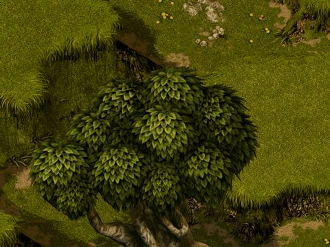
路爾斯-米魯里斯關口1Lv 1～5
| 怪物 | Lv | 數量 | 出現位置 |
 普羅夫 普羅夫 | 1 | 50 | 整張地圖 |
 普羅特 普羅特 | 2 | 16 | 整張地圖 |
 迪斯 迪斯 | 5 | 7 | 整張地圖 |

斯歐米森林1Lv 1～5
| 怪物 | Lv | 數量 | 出現位置 |
| 星星寶箱 | 1 | 3 | 整張地圖 |
 波特 波特 | 1 | 262 | 整張地圖 |
 波特傑克 波特傑克 | 2 | 87 | 整張地圖 |
 刺蝟波特 刺蝟波特 | 5 | 42 | 整張地圖 |
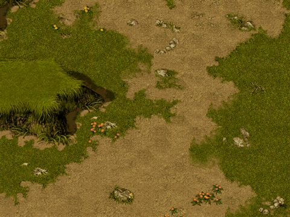
路爾斯-斯歐米關口1Lv 1～5
| 怪物 | Lv | 數量 | 出現位置 |
| 普羅夫 | 1 | 50 | 整張地圖 |
| 普羅特 | 2 | 16 | 整張地圖 |
| 迪斯 | 5 | 7 | 整張地圖 |

路爾斯森林1Lv 1～5
| 怪物 | Lv | 數量 | 出現位置 |
| 星星寶箱 | 1 | 3 | 整張地圖 |
| 普羅夫 | 1 | 306 | 整張地圖 |
| 普羅特 | 2 | 119 | 整張地圖 |
| 迪斯 | 5 | 42 | 整張地圖 |

魔界村森林1Lv 1～5
| 怪物 | Lv | 數量 | 出現位置 |
 小魔瓜 小魔瓜 | 1 | 306 | 整張地圖 |
| 星星寶箱 | 1 | 3 | 整張地圖 |
 本普魔瓜 本普魔瓜 | 2 | 119 | 整張地圖 |
 斯洛特魔瓜 斯洛特魔瓜 | 5 | 42 | 整張地圖 |

海賊村森林1Lv 1～5
| 怪物 | Lv | 數量 | 出現位置 |
| 星星寶箱 | 1 | 3 | 整張地圖 |
 棕毛地鼠 棕毛地鼠 | 1 | 306 | 整張地圖 |
| 棕毛地鼠 | 2 | 119 | 整張地圖 |
 庫娜 庫娜 | 5 | 42 | 整張地圖 |

加利卡拉森林1Lv 1～68
| 怪物 | Lv | 數量 | 出現位置 |
| 星星寶箱 | 1 | 3 | 整張地圖 |
 阿英 阿英 | 60 | 71 | 整張地圖 |
 假面魔瓜 假面魔瓜 | 66 | 26 | 整張地圖 |
 黃金小魔女 黃金小魔女 | 68 | 182 | 整張地圖 |
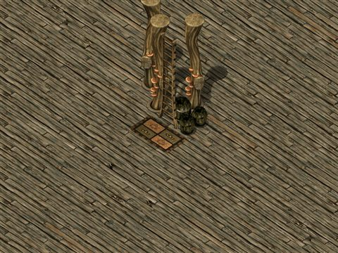
初級地城1Lv 1～10
| 怪物 | Lv | 數量 | 出現位置 |
| 魯奇摩斯 | 1 | 24 | 整張地圖 |
| 魯奇普羅夫 | 1 | 18 | 整張地圖 |
| 魯奇波特 | 1 | 21 | 整張地圖 |
 魯奇哥布林 魯奇哥布林 | 5 | 15～18 | 整張地圖 |
 魯奇諾肯 魯奇諾肯 | 5 | 12～18 | 整張地圖 |
| 魯奇棕毛地鼠 | 10 | 10～18 | 整張地圖 |
| 魯奇魔瓜 | 10 | 9～18 | 整張地圖 |
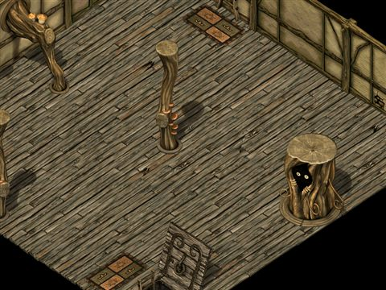
新手迷宮A_1Lv 1～1
| 怪物 | Lv | 數量 | 出現位置 |
| 魯奇摩斯 | 1 | 3～4 | 範圍 (1,1)-(48,48) |
| 魯奇波特 | 1 | 3～4 | 範圍 (1,1)-(48,48) |
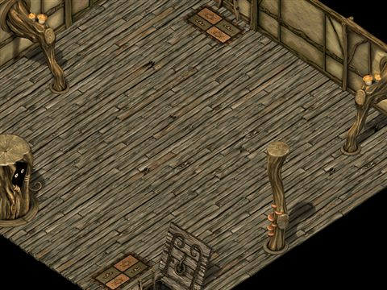
新手迷宮A_2Lv 1～5
| 怪物 | Lv | 數量 | 出現位置 |
| 魯奇普羅夫 | 1 | 3～4 | 範圍 (1,1)-(48,48) |
| 魯奇哥布林 | 5 | 3～4 | 範圍 (1,1)-(48,48) |

米魯里斯森林2Lv 4～8
| 怪物 | Lv | 數量 | 出現位置 |
| 摩斯索爾傑 | 4 | 306 | 整張地圖 |
| 基林摩斯 | 5 | 119 | 整張地圖 |
 太陽寶箱 太陽寶箱 | 5 | 3 | 整張地圖 |
 惡夜摩斯 惡夜摩斯 | 8 | 42 | 整張地圖 |
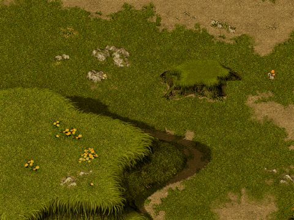
路爾斯-米魯里斯關口2Lv 4～8
| 怪物 | Lv | 數量 | 出現位置 |
 迪斯特 迪斯特 | 4 | 92 | 整張地圖 |
 達伊特 達伊特 | 5 | 33 | 整張地圖 |
 達伊特倫 達伊特倫 | 8 | 16 | 整張地圖 |

斯歐米森林2Lv 4～8
| 怪物 | Lv | 數量 | 出現位置 |
| 傑克金 | 4 | 262 | 整張地圖 |
| 哈德刺蝟波特 | 5 | 87 | 整張地圖 |
| 太陽寶箱 | 5 | 3 | 整張地圖 |
 波特騎士 波特騎士 | 8 | 42 | 整張地圖 |
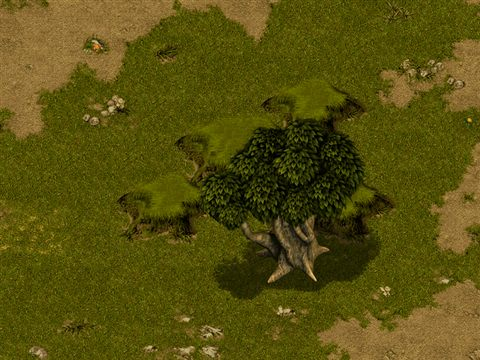
路爾斯-斯歐米關口2Lv 4～8
| 怪物 | Lv | 數量 | 出現位置 |
| 迪斯特 | 4 | 92 | 整張地圖 |
| 達伊特 | 5 | 33 | 整張地圖 |
| 達伊特倫 | 8 | 16 | 整張地圖 |

路爾斯森林2Lv 4～8
| 怪物 | Lv | 數量 | 出現位置 |
| 迪斯特 | 4 | 306 | 整張地圖 |
| 太陽寶箱 | 5 | 3 | 整張地圖 |
| 達伊特 | 5 | 119 | 整張地圖 |
| 達伊特倫 | 8 | 42 | 整張地圖 |

魔界村森林2Lv 4～8
| 怪物 | Lv | 數量 | 出現位置 |
| 卡內羅魔瓜 | 4 | 306 | 整張地圖 |
| 傑諾魔瓜 | 5 | 119 | 整張地圖 |
| 太陽寶箱 | 5 | 3 | 整張地圖 |
 斯皮羅 斯皮羅 | 8 | 42 | 整張地圖 |

海賊村森林2Lv 4～8
| 怪物 | Lv | 數量 | 出現位置 |
| 波奇 | 4 | 306 | 整張地圖 |
| 太陽寶箱 | 5 | 3 | 整張地圖 |
 梅加洛棕毛地鼠 梅加洛棕毛地鼠 | 5 | 119 | 整張地圖 |
| 比克庫娜 | 8 | 42 | 整張地圖 |

艾德安德原野 wiki 資料Lv 4～5
| 怪物 | Lv | 數量 | 出現位置 |
| 迪斯特 | 4 | 10～15 | 範圍 (1,1)-(98,78) |
| 迪斯 | 5 | 10～15 | 範圍 (1,1)-(98,78) |
| 達伊特 | 5 | 10～15 | 範圍 (1,1)-(98,78) |

加利卡拉森林2Lv 5～68
| 怪物 | Lv | 數量 | 出現位置 |
| 太陽寶箱 | 5 | 3 | 整張地圖 |
| 幽影魔瓜 | 60 | 182 | 整張地圖 |
| 黃金小魔女 | 68 | 97 | 整張地圖 |
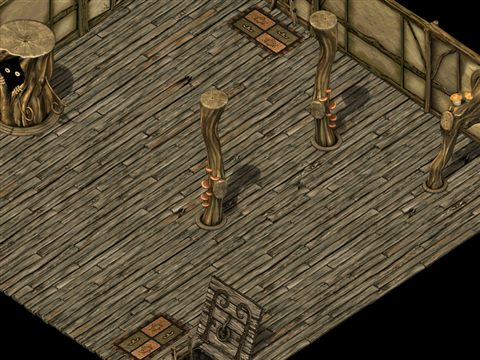
新手迷宮A_3Lv 5～10
| 怪物 | Lv | 數量 | 出現位置 |
| 魯奇諾肯 | 5 | 3～4 | 範圍 (1,1)-(48,48) |
| 魯奇棕毛地鼠 | 10 | 3～4 | 範圍 (1,1)-(48,48) |
| 魯奇魔瓜 | 10 | 3～4 | 範圍 (1,1)-(48,48) |

米魯里斯森林3Lv 7～15
| 怪物 | Lv | 數量 | 出現位置 |
| 摩斯詹皮恩 | 7 | 306 | 整張地圖 |
| 德斯惡夜摩斯 | 8 | 119 | 整張地圖 |
 雲朵寶箱 雲朵寶箱 | 10 | 2 | 整張地圖 |
 摩斯凱蒂 摩斯凱蒂 | 11 | 42 | 整張地圖 |
 月亮寶箱 月亮寶箱 | 15 | 1 | 整張地圖 |

斯歐米森林3Lv 7～15
| 怪物 | Lv | 數量 | 出現位置 |
| 刺蝟波特羅德 | 7 | 306 | 整張地圖 |
| 波特騎士赫德爾 | 8 | 119 | 整張地圖 |
| 雲朵寶箱 | 10 | 2 | 整張地圖 |
 波特將軍 波特將軍 | 11 | 42 | 整張地圖 |
| 月亮寶箱 | 15 | 1 | 整張地圖 |

路爾斯森林3Lv 7～15
| 怪物 | Lv | 數量 | 出現位置 |
 捷斯 捷斯 | 7 | 306 | 整張地圖 |
 捷斯特 捷斯特 | 8 | 119 | 整張地圖 |
| 雲朵寶箱 | 10 | 2 | 整張地圖 |
 迪斯凱帝 迪斯凱帝 | 11 | 42 | 整張地圖 |
| 月亮寶箱 | 15 | 1 | 整張地圖 |

魔界村森林3Lv 7～15
| 怪物 | Lv | 數量 | 出現位置 |
| 吸血魔瓜 | 7 | 306 | 整張地圖 |
| 麥德斯皮羅 | 8 | 119 | 整張地圖 |
| 雲朵寶箱 | 10 | 2 | 整張地圖 |
| 基林斯皮羅 | 11 | 42 | 整張地圖 |
| 月亮寶箱 | 15 | 1 | 整張地圖 |

海賊村森林3Lv 7～15
| 怪物 | Lv | 數量 | 出現位置 |
| 特拉莫棕毛地鼠 | 7 | 306 | 整張地圖 |
| 絨毛鼠 | 8 | 119 | 整張地圖 |
| 雲朵寶箱 | 10 | 2 | 整張地圖 |
| 基勒庫娜 | 11 | 42 | 整張地圖 |
| 月亮寶箱 | 15 | 1 | 整張地圖 |

米魯里斯森林4Lv 10～14
| 怪物 | Lv | 數量 | 出現位置 |
 哥布林 哥布林 | 10 | 236 | 整張地圖 |
 漢德哥布林 漢德哥布林 | 11 | 92 | 整張地圖 |
 炸彈哥布林 炸彈哥布林 | 14 | 33 | 整張地圖 |

斯歐米森林4Lv 10～14
| 怪物 | Lv | 數量 | 出現位置 |
 諾肯 諾肯 | 10 | 236 | 整張地圖 |
| 淑女諾肯 | 11 | 92 | 整張地圖 |
 紐克諾肯 紐克諾肯 | 14 | 33 | 整張地圖 |

路爾斯森林4Lv 10～14
| 怪物 | Lv | 數量 | 出現位置 |
 YOYO諾肯 YOYO諾肯 | 10 | 236 | 整張地圖 |
 諾肯叔叔 諾肯叔叔 | 11 | 92 | 整張地圖 |
| 紐克 | 14 | 33 | 整張地圖 |

魔界村森林4Lv 10～14
| 怪物 | Lv | 數量 | 出現位置 |
 哈洛溫魔瓜 哈洛溫魔瓜 | 10 | 236 | 整張地圖 |
 賽可魔瓜 賽可魔瓜 | 11 | 92 | 整張地圖 |
 魔瓜花 魔瓜花 | 14 | 33 | 整張地圖 |

海賊村森林4Lv 10～14
| 怪物 | Lv | 數量 | 出現位置 |
 獨眼怪 獨眼怪 | 10 | 236 | 整張地圖 |
 瘋狂獨眼怪 瘋狂獨眼怪 | 11 | 92 | 整張地圖 |
 奈特梅爾 奈特梅爾 | 14 | 33 | 整張地圖 |

加利卡拉森林3Lv 10～68
| 怪物 | Lv | 數量 | 出現位置 |
| 雲朵寶箱 | 10 | 2 | 整張地圖 |
| 月亮寶箱 | 15 | 1 | 整張地圖 |
| 殺手魔瓜 | 59 | 71 | 整張地圖 |
| 斯皮羅 | 61 | 26 | 整張地圖 |
| 黃金小魔女 | 68 | 182 | 整張地圖 |

艾德隧道2 wiki 資料Lv 10～12
| 怪物 | Lv | 數量 | 出現位置 |
 巴巴牙蜥蜴 巴巴牙蜥蜴 | 10 | 6～8 | 範圍 (1,1)-(78,98) |
| 純白蜥蜴 | 10 | 6～8 | 範圍 (1,1)-(78,98) |
 公牛蜥蜴 公牛蜥蜴 | 12 | 6～8 | 範圍 (1,1)-(78,98) |

艾德隧道1 wiki 資料Lv 10～12
| 怪物 | Lv | 數量 | 出現位置 |
| 海灣蜥蜴 | 10 | 6～8 | 範圍 (1,1)-(88,88) |
 蝙蝠 蝙蝠 | 10 | 6～8 | 範圍 (1,1)-(88,88) |
| 吉納斯蝙蝠 | 12 | 6～8 | 範圍 (1,1)-(88,88) |
初級地城2Lv 11～20
| 怪物 | Lv | 數量 | 出現位置 |
| 索夫特摩斯 | 11 | 24 | 整張地圖 |
| 索夫特普羅夫 | 11 | 18 | 整張地圖 |
| 索夫特波特 | 11 | 21 | 整張地圖 |
| 索夫特哥布林 | 15 | 15～18 | 整張地圖 |
| 索夫特諾肯 | 15 | 12～18 | 整張地圖 |
| 索夫特獨眼怪 | 20 | 10～18 | 整張地圖 |
| 索夫特魔瓜 | 20 | 9～18 | 整張地圖 |
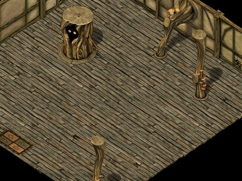
新手迷宮B_bLv 11～11
| 怪物 | Lv | 數量 | 出現位置 |
| 索夫特摩斯 | 11 | 3～4 | 範圍 (1,1)-(48,48) |
| 索夫特波特 | 11 | 3～4 | 範圍 (1,1)-(48,48) |
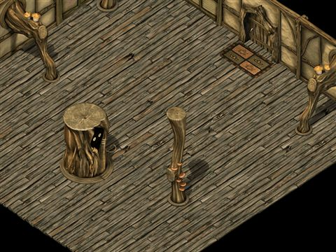
新手迷宮B_cLv 11～15
| 怪物 | Lv | 數量 | 出現位置 |
| 索夫特普羅夫 | 11 | 3～4 | 範圍 (1,1)-(48,48) |
| 索夫特哥布林 | 15 | 3～4 | 範圍 (1,1)-(48,48) |

米魯里斯森林5Lv 13～17
| 怪物 | Lv | 數量 | 出現位置 |
| 哥布林騎士 | 13 | 236 | 整張地圖 |
 亞魔克 亞魔克 | 14 | 92 | 整張地圖 |
 佩利哥布林 佩利哥布林 | 17 | 33 | 整張地圖 |

斯歐米森林5Lv 13～17
| 怪物 | Lv | 數量 | 出現位置 |
| 真特諾肯 | 13 | 236 | 整張地圖 |
 漢德諾肯 漢德諾肯 | 14 | 92 | 整張地圖 |
| 諾肯爺爺 | 17 | 33 | 整張地圖 |

路爾斯森林5Lv 13～17
| 怪物 | Lv | 數量 | 出現位置 |
| 塔夫諾肯叔叔 | 13 | 236 | 整張地圖 |
 諾克叔父 諾克叔父 | 14 | 92 | 整張地圖 |
| 伐木諾肯 | 17 | 33 | 整張地圖 |

魔界村森林5Lv 13～17
| 怪物 | Lv | 數量 | 出現位置 |
| 瘋狂魔瓜 | 13 | 236 | 整張地圖 |
 斯萊瑟魔瓜 斯萊瑟魔瓜 | 14 | 92 | 整張地圖 |
| 斯波伊爾魔瓜 | 17 | 33 | 整張地圖 |

海賊村森林5Lv 13～17
| 怪物 | Lv | 數量 | 出現位置 |
| 盧納蒂克獨眼怪 | 13 | 236 | 整張地圖 |
 安迪爾斯獨眼怪 安迪爾斯獨眼怪 | 14 | 92 | 整張地圖 |
| 米迪爾斯獨眼怪 | 17 | 33 | 整張地圖 |
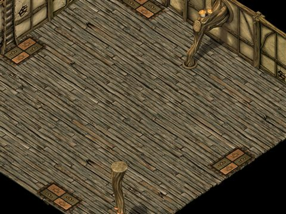
新手迷宮B_eLv 15～20
| 怪物 | Lv | 數量 | 出現位置 |
| 索夫特諾肯 | 15 | 3～4 | 範圍 (1,1)-(48,48) |
| 索夫特獨眼怪 | 20 | 3～4 | 範圍 (1,1)-(48,48) |
| 索夫特魔瓜 | 20 | 3～4 | 範圍 (1,1)-(48,48) |

米魯里斯森林6Lv 16～21
| 怪物 | Lv | 數量 | 出現位置 |
| 亞魔克司 | 16 | 236 | 整張地圖 |
| 普萊恩 | 17 | 92 | 整張地圖 |
 羅德哥布林 羅德哥布林 | 21 | 33 | 整張地圖 |

斯歐米森林6Lv 16～50
| 怪物 | Lv | 數量 | 出現位置 |
| 哥布林諾肯 | 16 | 236 | 整張地圖 |
| 卡傑爾諾肯 | 17 | 92 | 整張地圖 |
| 斯派恩諾肯 | 21 | 33 | 整張地圖 |
| 菁英摩斯 | 50 | 1 | 整張地圖 |

路爾斯森林6Lv 16～96
| 怪物 | Lv | 數量 | 出現位置 |
| 比克諾克叔父 | 16 | 236 | 整張地圖 |
| 伐木諾肯 | 17 | 92 | 整張地圖 |
| 赫比紐克 | 21 | 33 | 整張地圖 |
 高地守衛 高地守衛 | 96 | 1 | 整張地圖 |

魔界村森林6Lv 16～96
| 怪物 | Lv | 數量 | 出現位置 |
| 麥尼亞克魔瓜 | 16 | 236 | 整張地圖 |
| 魔瓜麥瑟克 | 17 | 92 | 整張地圖 |
| 魔瓜花金 | 21 | 33 | 整張地圖 |
| 殺戮魔瓜 | 96 | 1 | 整張地圖 |

海賊村森林6Lv 16～96
| 怪物 | Lv | 數量 | 出現位置 |
| 魯迪爾斯獨眼怪 | 16 | 236 | 整張地圖 |
| 基林奈特梅爾 | 17 | 92 | 整張地圖 |
| 戴德奈特梅爾 | 21 | 33 | 整張地圖 |
 絕望守衛 絕望守衛 | 96 | 1 | 整張地圖 |

初級地城3Lv 21～30
| 怪物 | Lv | 數量 | 出現位置 |
| 艾利門特摩斯 | 21 | 24 | 整張地圖 |
| 艾利門特普羅夫 | 21 | 18 | 整張地圖 |
| 艾利門特波特 | 21 | 21 | 整張地圖 |
| 艾利門特哥布林 | 25 | 15～18 | 整張地圖 |
| 艾利門特諾肯 | 25 | 12～18 | 整張地圖 |
| 艾利門特獨眼怪 | 30 | 10～18 | 整張地圖 |
| 艾利門特魔瓜 | 30 | 9～18 | 整張地圖 |
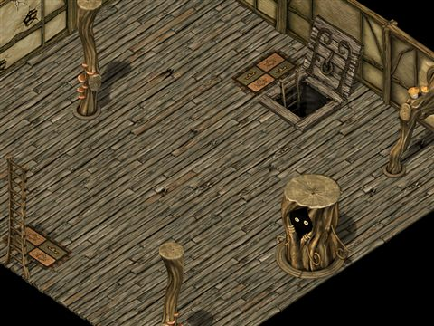
新手迷宮CLv 21～21
| 怪物 | Lv | 數量 | 出現位置 |
| 艾利門特摩斯 | 21 | 3～4 | 範圍 (1,1)-(48,48) |
| 艾利門特波特 | 21 | 3～4 | 範圍 (1,1)-(48,48) |
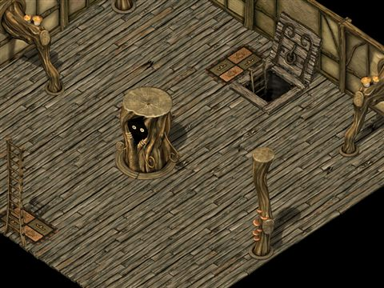
新手迷宮C2Lv 21～25
| 怪物 | Lv | 數量 | 出現位置 |
| 艾利門特普羅夫 | 21 | 3～4 | 範圍 (1,1)-(48,48) |
| 艾利門特哥布林 | 25 | 3～4 | 範圍 (1,1)-(48,48) |

新手迷宮D1Lv 25～30
| 怪物 | Lv | 數量 | 出現位置 |
| 艾利門特諾肯 | 25 | 3～4 | 範圍 (1,1)-(48,48) |
| 艾利門特獨眼怪 | 30 | 3～4 | 範圍 (1,1)-(48,48) |
| 艾利門特魔瓜 | 30 | 3～4 | 範圍 (1,1)-(48,48) |

初級地城4Lv 31～40
| 怪物 | Lv | 數量 | 出現位置 |
| 普萊默摩斯 | 31 | 24 | 整張地圖 |
| 普萊默普羅夫 | 31 | 18 | 整張地圖 |
| 普萊默波特 | 31 | 21 | 整張地圖 |
| 普萊默哥布林 | 35 | 15～18 | 整張地圖 |
| 普萊默諾肯 | 35 | 12～18 | 整張地圖 |
| 普萊默斯皮羅 | 40 | 9～18 | 整張地圖 |
| 普萊默獨眼怪 | 40 | 10～18 | 整張地圖 |
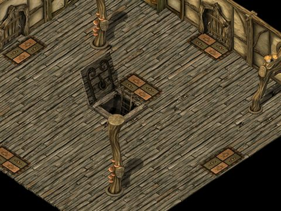
新手迷宮E-e1Lv 31～31
| 怪物 | Lv | 數量 | 出現位置 |
| 普萊默摩斯 | 31 | 3～4 | 範圍 (1,1)-(48,48) |
| 普萊默波特 | 31 | 3～4 | 範圍 (1,1)-(48,48) |
新手迷宮E-e2Lv 31～35
| 怪物 | Lv | 數量 | 出現位置 |
| 普萊默普羅夫 | 31 | 3～4 | 範圍 (1,1)-(48,48) |
| 普萊默哥布林 | 35 | 3～4 | 範圍 (1,1)-(48,48) |
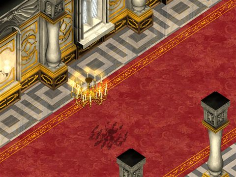
路爾斯城堡地城4Lv 31～95
| 怪物 | Lv | 數量 | 出現位置 |
| 普萊默波特 | 31 | 9 | 整張地圖 |
 格林卡德曼 格林卡德曼 | 85 | 10 | 整張地圖 |
 梅杜莎 梅杜莎 | 95 | 5～8 | 整張地圖 |
 燭妖鼠 燭妖鼠 | 95 | 8 | 整張地圖 |
 石化巴克朱伊 石化巴克朱伊 | 95 | 6～8 | 整張地圖 |
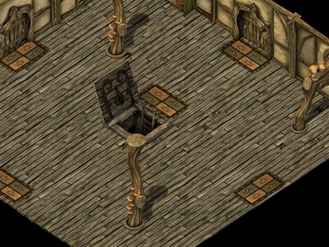
新手迷宮E-e3Lv 35～40
| 怪物 | Lv | 數量 | 出現位置 |
| 普萊默諾肯 | 35 | 3～4 | 範圍 (1,1)-(48,48) |
| 普萊默獨眼怪 | 40 | 3～4 | 範圍 (1,1)-(48,48) |


夢見之塔2 wiki 資料Lv 35～37
| 怪物 | Lv | 數量 | 出現位置 |
 小河童 小河童 | 35 | 6～8 | 範圍 (1,1)-(98,98) |
 紅色木芥子 紅色木芥子 | 36 | 6～8 | 範圍 (1,1)-(98,98) |
 傀儡 傀儡 | 37 | 6～8 | 範圍 (1,1)-(98,98) |
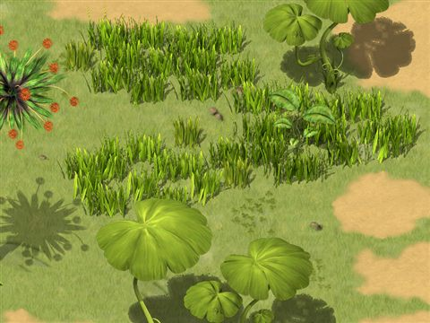
依卡魯斯草原1Lv 36～40
| 怪物 | Lv | 數量 | 出現位置 |
 象人爹地 象人爹地 | 36 | 37 | 整張地圖 |
| 象人爹地 | 40 | 9 | 整張地圖 |

夢見之塔3 wiki 資料Lv 36～37
| 怪物 | Lv | 數量 | 出現位置 |
| 藍色木芥子 | 36 | 6～8 | 範圍 (1,1)-(98,98) |
| 傀儡 | 37 | 6～8 | 範圍 (1,1)-(98,98) |
| 血色傀儡 | 37 | 6～8 | 範圍 (1,1)-(98,98) |
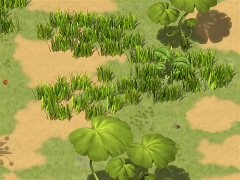
依卡魯斯草原2Lv 38～40
| 怪物 | Lv | 數量 | 出現位置 |
| 象人爹地 | 38 | 37 | 整張地圖 |
| 象人爹地 | 40 | 9 | 整張地圖 |

夢見之塔4 wiki 資料Lv 38～58
| 怪物 | Lv | 數量 | 出現位置 |
 敏捷的狐狸 敏捷的狐狸 | 38 | 6～8 | 範圍 (1,1)-(98,98) |
 黃天狗面具 黃天狗面具 | 48 | 6～8 | 範圍 (1,1)-(98,98) |
 紅武者 紅武者 | 58 | 6～8 | 範圍 (1,1)-(98,98) |

夢見之塔5 wiki 資料Lv 38～58
| 怪物 | Lv | 數量 | 出現位置 |
| 狡猾的狐狸 | 38 | 6～8 | 範圍 (1,1)-(98,98) |
| 黃天狗面具 | 48 | 6～8 | 範圍 (1,1)-(98,98) |
| 藍武者 | 58 | 6～8 | 範圍 (1,1)-(98,98) |
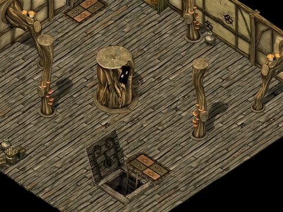
新手迷宮D2Lv 40～40
| 怪物 | Lv | 數量 | 出現位置 |
| 普萊默斯皮羅 | 40 | 3～4 | 範圍 (1,1)-(48,48) |
| 普萊默獨眼怪 | 40 | 3～4 | 範圍 (1,1)-(48,48) |
初級地城5Lv 41～50
| 怪物 | Lv | 數量 | 出現位置 |
| 朱尼爾摩斯 | 41 | 24 | 整張地圖 |
| 朱尼爾普羅夫 | 41 | 18 | 整張地圖 |
| 朱尼爾波特 | 41 | 21 | 整張地圖 |
| 朱尼爾哥布林 | 45 | 15～18 | 整張地圖 |
| 朱尼爾諾肯 | 45 | 12～18 | 整張地圖 |
| 朱尼爾凱帝 | 50 | 3～5 | 整張地圖 |
| 朱尼爾獨眼怪 | 50 | 10～18 | 整張地圖 |
| 朱尼爾魔王 | 50 | 2～4 | 整張地圖 |
| 朱尼爾魔瓜 | 50 | 9～18 | 整張地圖 |
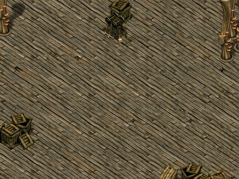
新手迷宮F_aLv 41～41
| 怪物 | Lv | 數量 | 出現位置 |
| 朱尼爾摩斯 | 41 | 10～14 | 範圍 (1,1)-(98,98) |
| 朱尼爾波特 | 41 | 10～14 | 範圍 (1,1)-(98,98) |

新手迷宮F_b1Lv 41～41
| 怪物 | Lv | 數量 | 出現位置 |
| 朱尼爾摩斯 | 41 | 10～14 | 範圍 (1,1)-(98,98) |
| 朱尼爾普羅夫 | 41 | 10～14 | 範圍 (1,1)-(98,98) |
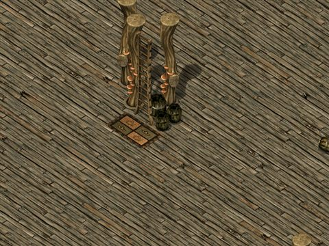
新手迷宮F_b2Lv 41～45
| 怪物 | Lv | 數量 | 出現位置 |
| 朱尼爾波特 | 41 | 10～14 | 範圍 (1,1)-(98,98) |
| 朱尼爾哥布林 | 45 | 10～14 | 範圍 (1,1)-(98,98) |

新手迷宮F_b3Lv 41～45
| 怪物 | Lv | 數量 | 出現位置 |
| 朱尼爾普羅夫 | 41 | 10～14 | 範圍 (1,1)-(98,98) |
| 朱尼爾諾肯 | 45 | 10～14 | 範圍 (1,1)-(98,98) |
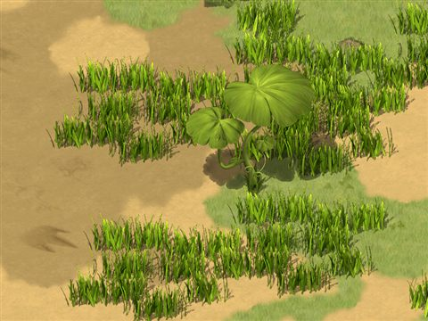
依卡魯斯哥因多爾1Lv 42～46
| 怪物 | Lv | 數量 | 出現位置 |
 象人媽咪 象人媽咪 | 42 | 37 | 整張地圖 |
| 象人媽咪 | 46 | 9 | 整張地圖 |
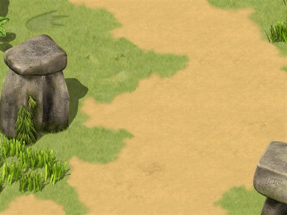
依卡魯斯哥因多爾2Lv 44～46
| 怪物 | Lv | 數量 | 出現位置 |
| 象人媽咪 | 44 | 37 | 整張地圖 |
| 象人媽咪 | 46 | 9 | 整張地圖 |
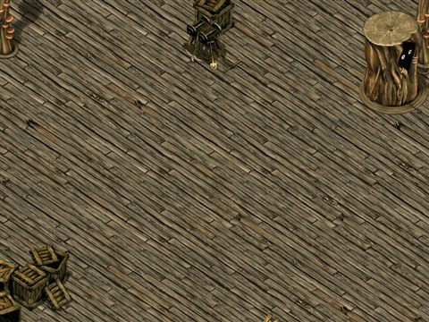
新手迷宮F_dLv 45～50
| 怪物 | Lv | 數量 | 出現位置 |
| 朱尼爾諾肯 | 45 | 9～13 | 範圍 (1,1)-(98,98) |
| 朱尼爾魔瓜 | 50 | 9～13 | 範圍 (1,1)-(98,98) |
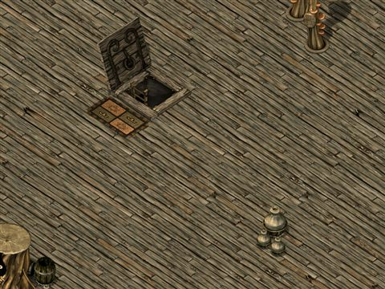
新手迷宮F_cLv 45～50
| 怪物 | Lv | 數量 | 出現位置 |
| 朱尼爾哥布林 | 45 | 10～14 | 範圍 (1,1)-(98,98) |
| 朱尼爾獨眼怪 | 50 | 10～14 | 範圍 (1,1)-(98,98) |

魔窟1 wiki 資料Lv 48～60
| 怪物 | Lv | 數量 | 出現位置 |
| 紐克諾肯 | 48 | 2～3 | 整張地圖 |
| 紐克諾肯 | 49 | 2～3 | 整張地圖 |
| 伐木諾肯 | 50 | 2～3 | 整張地圖 |
| 紐克諾肯 | 50 | 2～3 | 整張地圖 |
| 伐木諾肯 | 51 | 2～3 | 整張地圖 |
 達斯特 達斯特 | 51 | 42～52 | 整張地圖 |
| 達斯特 | 60 | 3～4 | 整張地圖 |

魔窟4 wiki 資料Lv 48～60
| 怪物 | Lv | 數量 | 出現位置 |
| 紐克諾肯 | 48 | 2～3 | 整張地圖 |
| 紐克諾肯 | 49 | 2～3 | 整張地圖 |
| 伐木諾肯 | 50 | 2～3 | 整張地圖 |
| 紐克諾肯 | 50 | 2～3 | 整張地圖 |
| 伐木諾肯 | 51 | 2～3 | 整張地圖 |
| 達斯特 | 51 | 36～45 | 整張地圖 |
 帽靈 帽靈 | 52 | 24～30 | 整張地圖 |
| 帽靈 | 60 | 29～37 | 整張地圖 |
| 達斯特 | 60 | 3～4 | 整張地圖 |
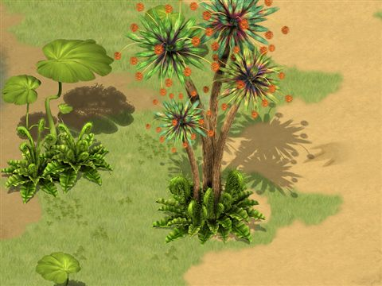
依卡魯斯植物區1Lv 48～52
| 怪物 | Lv | 數量 | 出現位置 |
 象人寶寶 象人寶寶 | 48 | 37 | 整張地圖 |
| 象人寶寶 | 52 | 9 | 整張地圖 |
海賊群島2Lv 50～64
| 怪物 | Lv | 數量 | 出現位置 |
 比比白猴 比比白猴 | 50 | 57 | 整張地圖 |
| 比比白猴 | 52 | 15 | 整張地圖 |
 怪樹人 怪樹人 | 64 | 4 | 整張地圖 |

海賊群島9Lv 50～90
| 怪物 | Lv | 數量 | 出現位置 |
| 比比白猴 | 50 | 43 | 整張地圖 |
| 比比白猴 | 52 | 15 | 整張地圖 |
 吉他手之猴 吉他手之猴 | 63 | 43 | 整張地圖 |
| 怪樹人 | 64 | 4 | 整張地圖 |
| 進化吉他手之猴 | 90 | 15 | 整張地圖 |
海賊群島15Lv 50～90
| 怪物 | Lv | 數量 | 出現位置 |
| 比比白猴 | 50 | 43 | 整張地圖 |
| 比比白猴 | 52 | 15 | 整張地圖 |
| 怪樹人 | 64 | 8 | 整張地圖 |
 猜拳螃蟹 猜拳螃蟹 | 69 | 29 | 整張地圖 |
 海盜魚怪 海盜魚怪 | 73 | 15 | 整張地圖 |
| 海馬騎士 | 78 | 4 | 整張地圖 |
 進化森巴之猴 進化森巴之猴 | 90 | 15 | 整張地圖 |
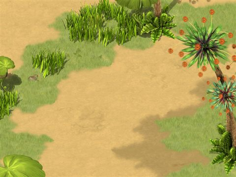
依卡魯斯植物區2Lv 50～52
| 怪物 | Lv | 數量 | 出現位置 |
| 象人寶寶 | 50 | 37 | 整張地圖 |
| 象人寶寶 | 52 | 9 | 整張地圖 |
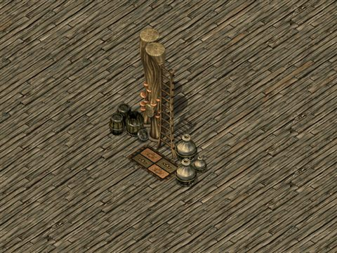
新手迷宮深處Lv 50～50
| 怪物 | Lv | 數量 | 出現位置 |
| 朱尼爾凱帝 | 50 | 1 | 定點 (75,74) |
| 朱尼爾獨眼怪 | 50 | 25～36 | 範圍 (1,1)-(148,148) |
| 朱尼爾魔王 | 50 | 1 | 定點 (75,86) |
| 朱尼爾魔瓜 | 50 | 25～36 | 範圍 (1,1)-(148,148) |
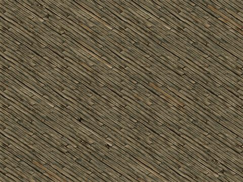
初級地城6Lv 50～50
| 怪物 | Lv | 數量 | 出現位置 |
 帕吉 帕吉 | 50 | 10～14 | 範圍 (1,1)-(148,148) |
 幽靈鬼箱 幽靈鬼箱 | 50 | 10～14 | 範圍 (1,1)-(148,148) |
 幽靈鬼衣 幽靈鬼衣 | 50 | 10～14 | 範圍 (1,1)-(148,148) |
 惡魔僵屍 惡魔僵屍 | 50 | 10～14 | 範圍 (1,1)-(148,148) |
 斯摩迪 斯摩迪 | 50 | 10～14 | 範圍 (1,1)-(148,148) |
 死靈妖貓 死靈妖貓 | 50 | 3～4 | 範圍 (1,1)-(148,148) |

魔窟6 wiki 資料Lv 51～60
| 怪物 | Lv | 數量 | 出現位置 |
| 達斯特 | 51 | 36～45 | 整張地圖 |
| 帽靈 | 52 | 24～30 | 整張地圖 |
 花瓶 花瓶 | 53 | 18～22 | 整張地圖 |
| 帽靈 | 60 | 29～37 | 整張地圖 |
| 花瓶 | 60 | 3～4 | 整張地圖 |
| 達斯特 | 60 | 3～4 | 整張地圖 |


海賊群島5Lv 52～90
| 怪物 | Lv | 數量 | 出現位置 |
| 比比白猴 | 52 | 58 | 整張地圖 |
| 夏豔之猴 | 59 | 44 | 整張地圖 |
| 吉他手之猴 | 63 | 15 | 整張地圖 |
| 怪樹人 | 64 | 4 | 整張地圖 |
| 進化吉他手之猴 | 90 | 15 | 整張地圖 |
海賊群島8Lv 52～64
| 怪物 | Lv | 數量 | 出現位置 |
| 比比白猴 | 52 | 58 | 整張地圖 |
 森巴之猴 森巴之猴 | 61 | 29 | 整張地圖 |
| 怪樹人 | 64 | 4 | 整張地圖 |
海賊群島16Lv 52～90
| 怪物 | Lv | 數量 | 出現位置 |
| 比比白猴 | 52 | 58 | 整張地圖 |
| 怪樹人 | 64 | 8 | 整張地圖 |
 潛艇海螺 潛艇海螺 | 71 | 29 | 整張地圖 |
| 海盜魚怪 | 75 | 15 | 整張地圖 |
| 海馬法師 | 80 | 4 | 整張地圖 |
| 進化森巴之猴 | 90 | 15 | 整張地圖 |


魔窟12 wiki 資料Lv 54～70
| 怪物 | Lv | 數量 | 出現位置 |
 鞋妖 鞋妖 | 54 | 36～45 | 整張地圖 |
 小紅帽 小紅帽 | 55 | 36～45 | 整張地圖 |
 卡曼特 卡曼特 | 56 | 2 | 整張地圖 |
| 書卷坡特 | 56 | 2～3 | 整張地圖 |
| 特雅索 | 56 | 5～7 | 整張地圖 |
| 腰帶坡特 | 56 | 9～12 | 整張地圖 |
| 金粉坡特 | 56 | 3～4 | 整張地圖 |
| 風衣魔 | 56 | 2 | 整張地圖 |
| 小紅帽 | 70 | 15～19 | 整張地圖 |
| 鞋妖 | 70 | 4～6 | 整張地圖 |
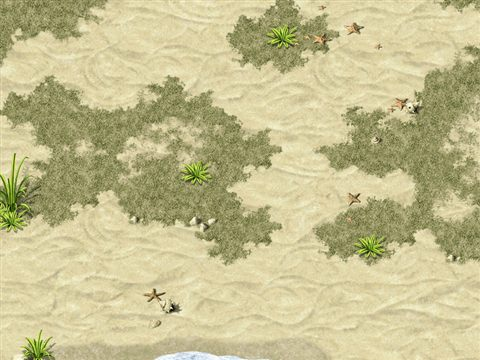
海賊群島3Lv 54～64
| 怪物 | Lv | 數量 | 出現位置 |
 頑皮猴 頑皮猴 | 54 | 57 | 整張地圖 |
| 頑皮猴 | 56 | 15 | 整張地圖 |
| 夏豔之猴 | 57 | 29 | 整張地圖 |
| 夏豔之猴 | 59 | 15 | 整張地圖 |
| 怪樹人 | 64 | 4 | 整張地圖 |
海賊群島7Lv 54～64
| 怪物 | Lv | 數量 | 出現位置 |
| 頑皮猴 | 54 | 29 | 整張地圖 |
| 頑皮猴 | 56 | 15 | 整張地圖 |
| 夏豔之猴 | 59 | 44 | 整張地圖 |
| 怪樹人 | 64 | 4 | 整張地圖 |
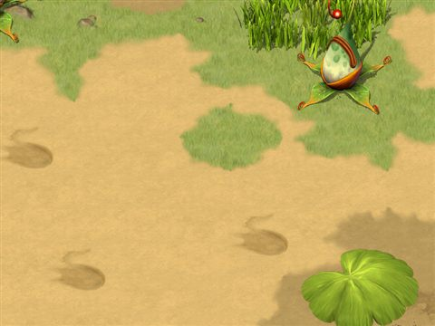
依卡魯斯植物區3Lv 54～58
| 怪物 | Lv | 數量 | 出現位置 |
 劍齒虎 劍齒虎 | 54 | 37 | 整張地圖 |
| 劍齒虎 | 58 | 9 | 整張地圖 |


魔窟11 wiki 資料Lv 55～70
| 怪物 | Lv | 數量 | 出現位置 |
| 小紅帽 | 55 | 36～45 | 整張地圖 |
| 卡曼特 | 56 | 2 | 整張地圖 |
| 書卷坡特 | 56 | 2～3 | 整張地圖 |
| 特雅索 | 56 | 5～7 | 整張地圖 |
| 腰帶坡特 | 56 | 9～12 | 整張地圖 |
| 金粉坡特 | 56 | 3～4 | 整張地圖 |
| 風衣魔 | 56 | 2 | 整張地圖 |
| 小紅帽 | 70 | 15～19 | 整張地圖 |

魔窟9 wiki 資料Lv 56～70
| 怪物 | Lv | 數量 | 出現位置 |
| 卡曼特 | 56 | 2 | 整張地圖 |
| 書卷坡特 | 56 | 2～3 | 整張地圖 |
| 特雅索 | 56 | 5～7 | 整張地圖 |
| 腰帶坡特 | 56 | 9～12 | 整張地圖 |
| 金粉坡特 | 56 | 3～4 | 整張地圖 |
| 風衣魔 | 56 | 2 | 整張地圖 |
| 小紅帽 | 70 | 13～16 | 整張地圖 |

海賊群島4Lv 56～64
| 怪物 | Lv | 數量 | 出現位置 |
| 頑皮猴 | 56 | 72 | 整張地圖 |
| 森巴之猴 | 61 | 29 | 整張地圖 |
| 怪樹人 | 64 | 4 | 整張地圖 |
海賊群島6Lv 56～64
| 怪物 | Lv | 數量 | 出現位置 |
| 頑皮猴 | 56 | 44 | 整張地圖 |
| 夏豔之猴 | 57 | 29 | 整張地圖 |
| 夏豔之猴 | 59 | 15 | 整張地圖 |
| 怪樹人 | 64 | 4 | 整張地圖 |
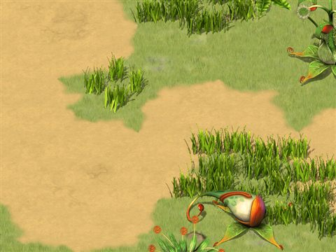
依卡魯斯植物區4Lv 56～58
| 怪物 | Lv | 數量 | 出現位置 |
| 劍齒虎 | 56 | 37 | 整張地圖 |
| 劍齒虎 | 58 | 9 | 整張地圖 |


加利卡拉森林4Lv 58～68
| 怪物 | Lv | 數量 | 出現位置 |
| 小魔瓜 | 58 | 26 | 整張地圖 |
| 黃金小魔女 | 68 | 253 | 整張地圖 |

加利卡拉森林5Lv 58～68
| 怪物 | Lv | 數量 | 出現位置 |
| 小魔瓜 | 58 | 26 | 整張地圖 |
| 黃金小魔女 | 68 | 253 | 整張地圖 |


魔窟18 wiki 資料Lv 58～65
| 怪物 | Lv | 數量 | 出現位置 |
 亞茲魔 亞茲魔 | 58 | 37～46 | 整張地圖 |
 喬克 喬克 | 59 | 2 | 整張地圖 |
| 泰茲魔 | 59 | 21～27 | 整張地圖 |
| 鍾奇 | 59 | 2 | 整張地圖 |
| 亞茲魔 | 65 | 6～7 | 整張地圖 |
| 泰茲魔 | 65 | 6～7 | 整張地圖 |

夢見之塔6 wiki 資料Lv 58～60
| 怪物 | Lv | 數量 | 出現位置 |
| 黑武者 | 58 | 8～12 | 範圍 (1,1)-(98,98) |
 千年夜叉 千年夜叉 | 60 | 1 | 定點 (50,50) |
| 紅天狗面具 | 60 | 8～12 | 範圍 (1,1)-(98,98) |


被遺忘的書房1 wiki 資料Lv 60～70
| 怪物 | Lv | 數量 | 出現位置 |
 大箱子 大箱子 | 60 | 3～4 | 範圍 (1,1)-(68,68) |
 木製寶箱怪 木製寶箱怪 | 65 | 3～4 | 範圍 (1,1)-(68,68) |
| 白色寶箱怪 | 70 | 3～4 | 範圍 (1,1)-(68,68) |

被遺忘的藏書庫1 wiki 資料Lv 60～82
| 怪物 | Lv | 數量 | 出現位置 |
| 積塵大箱 | 60 | 6～9 | 範圍 (1,1)-(98,98) |
 奇怪的掛鐘 奇怪的掛鐘 | 80 | 6～9 | 範圍 (1,1)-(98,98) |
 萬卷之書 萬卷之書 | 82 | 6～9 | 範圍 (1,1)-(98,98) |
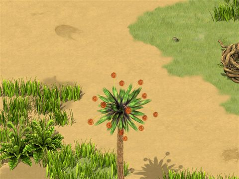
依卡魯斯阿爾同吉1Lv 60～64
| 怪物 | Lv | 數量 | 出現位置 |
 健美齒虎 健美齒虎 | 60 | 37 | 整張地圖 |
| 健美齒虎 | 64 | 9 | 整張地圖 |


被遺忘的書房2 wiki 資料Lv 62～72
| 怪物 | Lv | 數量 | 出現位置 |
| 大底箱 | 62 | 3～4 | 範圍 (1,1)-(68,68) |
 鋼鐵寶箱怪 鋼鐵寶箱怪 | 67 | 3～4 | 範圍 (1,1)-(68,68) |
| 藍色寶箱怪 | 68 | 3～4 | 範圍 (1,1)-(68,68) |
| 紅色寶箱怪 | 70 | 3～4 | 範圍 (1,1)-(68,68) |
| 黑色寶箱怪 | 72 | 1～2 | 範圍 (1,1)-(68,68) |
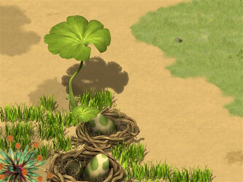
依卡魯斯阿爾同吉2Lv 62～64
| 怪物 | Lv | 數量 | 出現位置 |
| 健美齒虎 | 62 | 37 | 整張地圖 |
| 健美齒虎 | 64 | 9 | 整張地圖 |
海賊群島10Lv 64～67
| 怪物 | Lv | 數量 | 出現位置 |
| 怪樹人 | 64 | 4 | 整張地圖 |
 小螃蟹 小螃蟹 | 65 | 43 | 整張地圖 |
 小海螺 小海螺 | 67 | 29 | 整張地圖 |
海賊群島11Lv 64～90
| 怪物 | Lv | 數量 | 出現位置 |
| 怪樹人 | 64 | 8 | 整張地圖 |
| 小螃蟹 | 65 | 43 | 整張地圖 |
| 猜拳螃蟹 | 69 | 29 | 整張地圖 |
| 桑可凱普 | 90 | 15 | 整張地圖 |

海賊群島12Lv 64～71
| 怪物 | Lv | 數量 | 出現位置 |
| 怪樹人 | 64 | 8 | 整張地圖 |
| 小海螺 | 67 | 29 | 整張地圖 |
| 潛艇海螺 | 71 | 29 | 整張地圖 |
海賊群島13Lv 64～73
| 怪物 | Lv | 數量 | 出現位置 |
| 怪樹人 | 64 | 8 | 整張地圖 |
| 猜拳螃蟹 | 69 | 29 | 整張地圖 |
| 海盜魚怪 | 73 | 15 | 整張地圖 |
海賊群島14Lv 64～90
| 怪物 | Lv | 數量 | 出現位置 |
| 怪樹人 | 64 | 8 | 整張地圖 |
| 潛艇海螺 | 71 | 29 | 整張地圖 |
| 海盜魚怪 | 75 | 15 | 整張地圖 |
| 桑可凱普 | 90 | 15 | 整張地圖 |

 酷章魚
酷章魚 飛天章魚
飛天章魚


魔窟28 wiki 資料Lv 66～70
| 怪物 | Lv | 數量 | 出現位置 |
 血櫻蝸牛 血櫻蝸牛 | 66 | 11～15 | 整張地圖 |
| 卡德姆 | 67 | 4～6 | 整張地圖 |
| 札摩庫 | 67 | 1 | 整張地圖 |
 閃魂蝸牛 閃魂蝸牛 | 68 | 6～7 | 整張地圖 |
| 勒布莉 | 69 | 6～7 | 整張地圖 |
| 史蒂芬妮 | 69 | 14～18 | 整張地圖 |
| 哈特比 | 69 | 1 | 整張地圖 |
| 史蒂芬妮 | 70 | 3～4 | 整張地圖 |

魔窟29 wiki 資料Lv 66～96
| 怪物 | Lv | 數量 | 出現位置 |
| 血櫻蝸牛 | 66 | 11～15 | 整張地圖 |
| 卡德姆 | 67 | 4～6 | 整張地圖 |
| 札摩庫 | 67 | 1 | 整張地圖 |
| 閃魂蝸牛 | 68 | 6～7 | 整張地圖 |
| 勒布莉 | 69 | 6～7 | 整張地圖 |
| 史蒂芬妮 | 69 | 14～18 | 整張地圖 |
| 哈特比 | 69 | 1 | 整張地圖 |
| 史蒂芬妮 | 70 | 3～4 | 整張地圖 |
 哈丁巴 哈丁巴 | 70 | 21～27 | 整張地圖 |
| 哈丁巴魔王 | 71 | 29～36 | 整張地圖 |
| 哈庫巴 | 71 | 6～8 | 整張地圖 |
| 布雷斯 | 71 | 6～8 | 整張地圖 |
| 假面魔瓜 | 72 | 2～3 | 整張地圖 |
| 假面魔瓜 | 73 | 2～3 | 整張地圖 |
| 波特赫德 | 90 | 12～15 | 整張地圖 |
 火焰飛龍 火焰飛龍 | 96 | 1 | 整張地圖 |
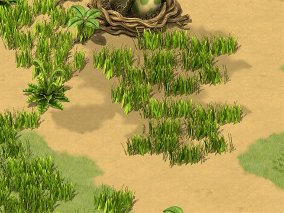
依卡魯斯阿爾同吉3Lv 66～70
| 怪物 | Lv | 數量 | 出現位置 |
 小劍齒虎 小劍齒虎 | 66 | 37 | 整張地圖 |
| 小劍齒虎 | 70 | 9 | 整張地圖 |


魔界村港 wiki 資料Lv 68～78
| 怪物 | Lv | 數量 | 出現位置 |
 諾斯猴 諾斯猴 | 68 | 9～13 | 範圍 (1,1)-(188,188) |
| 驚慌猴 | 68 | 9～13 | 範圍 (1,1)-(188,188) |
 賽帕猴 賽帕猴 | 78 | 9～13 | 範圍 (1,1)-(188,188) |
 賽帕蟲 賽帕蟲 | 78 | 9～13 | 範圍 (1,1)-(188,188) |

惡魔島2 wiki 資料Lv 68～71
| 怪物 | Lv | 數量 | 出現位置 |
 機械惡犬 機械惡犬 | 68 | 32 | 範圍 (58,62)-(119,151) |
 格林機械惡犬 格林機械惡犬 | 69 | 23 | 範圍 (58,62)-(119,151) |
 夢饜狂犬 夢饜狂犬 | 70 | 14 | 範圍 (58,62)-(119,151) |
| 夢饜狂犬 | 71 | 7 | 範圍 (58,62)-(119,151) |
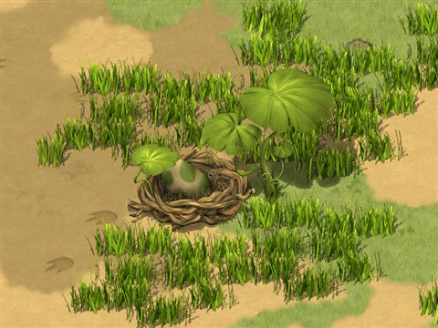
依卡魯斯阿爾同吉4Lv 68～70
| 怪物 | Lv | 數量 | 出現位置 |
| 小劍齒虎 | 68 | 37 | 整張地圖 |
| 小劍齒虎 | 70 | 9 | 整張地圖 |
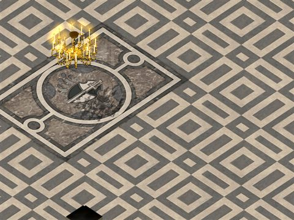
路爾斯城堡地城3Lv 68～85
| 怪物 | Lv | 數量 | 出現位置 |
| 機械惡犬 | 68 | 10 | 整張地圖 |
 達尼三號機 達尼三號機 | 74 | 9 | 整張地圖 |
 海賊木桶 海賊木桶 | 77 | 8 | 整張地圖 |
 海龜總管 海龜總管 | 83 | 6～8 | 整張地圖 |
 七海賤豪 七海賤豪 | 85 | 1 | 整張地圖 |

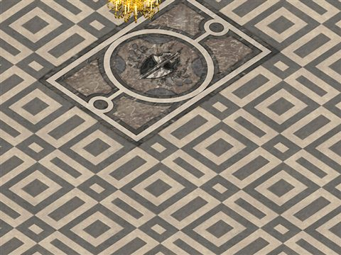
路爾斯城堡地城1Lv 69～75
| 怪物 | Lv | 數量 | 出現位置 |
| 幽靈鬼箱 | 69 | 10 | 整張地圖 |
| 惡魔僵屍 | 70 | 9 | 整張地圖 |
 西多利 西多利 | 71 | 8 | 整張地圖 |
| 幽靈鬼衣 | 74 | 6～8 | 整張地圖 |
 麥尼亞克 麥尼亞克 | 75 | 5～8 | 整張地圖 |


魔界村Lv 70～70
| 怪物 | Lv | 數量 | 出現位置 |
 修鍊用赫蘇阿比 修鍊用赫蘇阿比 | 70 | 34 | 定點 (14,51)、定點 (17,50)、定點 (19,54)… |
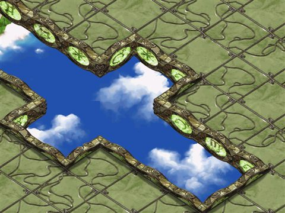
格烈佛第2-5區Lv 70～90
| 怪物 | Lv | 數量 | 出現位置 |
| 法希妮 | 70 | 1 | 整張地圖 |
 草莓砲蛙車 草莓砲蛙車 | 90 | 5 | 範圍 (16,66)-(105,66) |
 藍莓犀牛車 藍莓犀牛車 | 90 | 19 | 範圍 (16,66)-(105,66) |

被遺忘的藏書庫2 wiki 資料Lv 70～84
| 怪物 | Lv | 數量 | 出現位置 |
| 大雷米克 | 70 | 6～9 | 範圍 (1,1)-(108,108) |
| 恐怖的掛鐘 | 82 | 6～9 | 範圍 (1,1)-(108,108) |
| 萬卷之書 | 82 | 6～9 | 範圍 (1,1)-(108,108) |
 血染之書 血染之書 | 84 | 6～9 | 範圍 (1,1)-(108,108) |
萊貝雅城鎮外Lv 70～70
| 怪物 | Lv | 數量 | 出現位置 |
 怨靈麥查林 怨靈麥查林 | 70 | 9～18 | 範圍 (8,13)-(135,135) |
 杜皮拉麋鹿 杜皮拉麋鹿 | 70 | 9～18 | 範圍 (8,13)-(135,135) |
| 紅色杜皮拉 | 70 | 7～14 | 範圍 (8,13)-(135,135) |
| 紅色麥查林 | 70 | 12～31 | 範圍 (8,13)-(135,135) |
| 麥查林企鵝 | 70 | 28～56 | 範圍 (8,13)-(135,135) |
萊貝雅城北部Lv 70～70
| 怪物 | Lv | 數量 | 出現位置 |
| 怨靈杜皮拉 | 70 | 7～14 | 範圍 (12,15)-(139,135) |
| 怨靈麥查林 | 70 | 10～24 | 範圍 (12,15)-(139,135) |
| 杜皮拉麋鹿 | 70 | 10～24 | 範圍 (12,15)-(139,135) |
| 紅色杜皮拉 | 70 | 7～14 | 範圍 (12,15)-(139,135) |
| 紅色麥查林 | 70 | 17～35 | 範圍 (12,15)-(139,135) |
| 麥查林企鵝 | 70 | 35～63 | 範圍 (12,15)-(139,135) |
萊貝雅城東北部Lv 70～70
| 怪物 | Lv | 數量 | 出現位置 |
 布羅尼北極熊 布羅尼北極熊 | 70 | 7～14 | 範圍 (9,10)-(141,139) |
| 怨靈杜皮拉 | 70 | 7～14 | 範圍 (9,10)-(141,139) |
| 怨靈麥查林 | 70 | 10～24 | 範圍 (9,10)-(141,139) |
| 杜皮拉麋鹿 | 70 | 10～24 | 範圍 (9,10)-(141,139) |
| 紅色杜皮拉 | 70 | 7～14 | 範圍 (9,10)-(141,139) |
| 紅色麥查林 | 70 | 17～35 | 範圍 (9,10)-(141,139) |
| 麥查林企鵝 | 70 | 35～63 | 範圍 (9,10)-(141,139) |
尼普藍得雪原Lv 70～70
| 怪物 | Lv | 數量 | 出現位置 |
| 布羅尼北極熊 | 70 | 7～14 | 範圍 (9,12)-(139,137) |
| 怨靈布羅尼 | 70 | 3～10 | 範圍 (9,12)-(139,137) |
| 怨靈杜皮拉 | 70 | 7～14 | 範圍 (9,12)-(139,137) |
| 怨靈麥查林 | 70 | 17～35 | 範圍 (9,12)-(139,137) |
| 杜皮拉麋鹿 | 70 | 17～28 | 範圍 (9,12)-(139,137) |
| 紅色布羅尼 | 70 | 3～10 | 範圍 (9,12)-(139,137) |
| 紅色杜皮拉 | 70 | 7～14 | 範圍 (9,12)-(139,137) |
| 紅色麥查林 | 70 | 17～35 | 範圍 (9,12)-(139,137) |
| 麥查林企鵝 | 70 | 17～35 | 範圍 (9,12)-(139,137) |
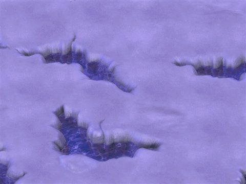
亞德禮紛的冰原Lv 70～70
| 怪物 | Lv | 數量 | 出現位置 |
| 布羅尼北極熊 | 70 | 14～21 | 範圍 (9,10)-(140,138) |
| 怨靈布羅尼 | 70 | 7～17 | 範圍 (9,10)-(140,138) |
| 怨靈杜皮拉 | 70 | 7～14 | 範圍 (9,10)-(140,138) |
| 怨靈麥查林 | 70 | 7～21 | 範圍 (9,10)-(140,138) |
| 杜皮拉麋鹿 | 70 | 14～42 | 範圍 (9,10)-(140,138) |
| 紅色布羅尼 | 70 | 7～17 | 範圍 (9,10)-(140,138) |
| 紅色杜皮拉 | 70 | 7～21 | 範圍 (9,10)-(140,138) |
| 紅色麥查林 | 70 | 3～10 | 範圍 (9,10)-(140,138) |
| 麥查林企鵝 | 70 | 3～10 | 範圍 (9,10)-(140,138) |
亞德禮紛1層迴廊Lv 70～70
| 怪物 | Lv | 數量 | 出現位置 |
 雪魔劍士 雪魔劍士 | 70 | 9～21 | 範圍 (14,15)-(145,145) |
 雪魔槍兵 雪魔槍兵 | 70 | 31～49 | 範圍 (14,15)-(145,145) |

雷卡房間 wiki 資料Lv 70～70
| 怪物 | Lv | 數量 | 出現位置 |
 冰霜貴族 冰霜貴族 | 70 | 1 | 範圍 (8,13)-(108,108) |
| 雪魔劍士 | 70 | 13～21 | 範圍 (8,13)-(108,108) |
| 雪魔槍兵 | 70 | 13～21 | 範圍 (8,13)-(108,108) |
| 雪魔騎士 | 70 | 3～14 | 範圍 (8,13)-(108,108) |
| 黃色雪魔劍士 | 70 | 9～14 | 範圍 (8,13)-(108,108) |

特里培房間 wiki 資料Lv 70～70
| 怪物 | Lv | 數量 | 出現位置 |
| 冰霜貴族 | 70 | 1 | 範圍 (8,13)-(108,108) |
| 雪魔劍士 | 70 | 13～21 | 範圍 (8,13)-(108,108) |
| 雪魔槍兵 | 70 | 22～38 | 範圍 (8,13)-(108,108) |
| 雪魔騎士 | 70 | 3～14 | 範圍 (8,13)-(108,108) |
| 黃色雪魔劍士 | 70 | 9～14 | 範圍 (8,13)-(108,108) |

普羅斯米房間 wiki 資料Lv 70～70
| 怪物 | Lv | 數量 | 出現位置 |
| 冰霜貴族 | 70 | 1 | 範圍 (8,13)-(108,108) |
| 怨靈劍士 | 70 | 9～14 | 範圍 (8,13)-(108,108) |
| 怨靈槍兵 | 70 | 13～21 | 範圍 (8,13)-(108,108) |
| 雪魔劍士 | 70 | 13～21 | 範圍 (8,13)-(108,108) |
| 雪魔槍兵 | 70 | 13～21 | 範圍 (8,13)-(108,108) |
| 雪魔騎士 | 70 | 3～14 | 範圍 (8,13)-(108,108) |
亞德禮紛2層迴廊Lv 70～70
| 怪物 | Lv | 數量 | 出現位置 |
| 怨靈劍士 | 70 | 3～14 | 範圍 (14,15)-(145,145) |
| 怨靈槍兵 | 70 | 9～14 | 範圍 (14,15)-(145,145) |
| 雪魔劍士 | 70 | 13～24 | 範圍 (14,15)-(145,145) |
| 雪魔槍兵 | 70 | 27～49 | 範圍 (14,15)-(145,145) |
| 黃色雪魔劍士 | 70 | 3～14 | 範圍 (14,15)-(145,145) |

黛瑪房間 wiki 資料Lv 70～70
| 怪物 | Lv | 數量 | 出現位置 |
| 冰霜貴族 | 70 | 1 | 範圍 (8,13)-(108,108) |
| 怨靈劍士 | 70 | 9～14 | 範圍 (8,13)-(108,108) |
| 怨靈槍兵 | 70 | 13～21 | 範圍 (8,13)-(108,108) |
| 雪魔劍士 | 70 | 13～21 | 範圍 (8,13)-(108,108) |
| 雪魔槍兵 | 70 | 22～38 | 範圍 (8,13)-(108,108) |
| 雪魔騎士 | 70 | 3～14 | 範圍 (8,13)-(108,108) |
斯帕克羅房間Lv 70～70
| 怪物 | Lv | 數量 | 出現位置 |
| 冰霜貴族 | 70 | 1 | 範圍 (8,13)-(108,108) |
| 怨靈槍兵 | 70 | 13～21 | 範圍 (8,13)-(108,108) |
| 雪魔劍士 | 70 | 13～21 | 範圍 (8,13)-(108,108) |
| 雪魔槍兵 | 70 | 22～38 | 範圍 (8,13)-(108,108) |
| 雪魔騎士 | 70 | 3～14 | 範圍 (8,13)-(108,108) |
| 黃色雪魔劍士 | 70 | 9～14 | 範圍 (8,13)-(108,108) |

歐爾多房間 wiki 資料Lv 70～70
| 怪物 | Lv | 數量 | 出現位置 |
| 冰霜貴族 | 70 | 1 | 範圍 (8,13)-(108,108) |
| 怨靈劍士 | 70 | 9～14 | 範圍 (8,13)-(108,108) |
| 怨靈槍兵 | 70 | 13～21 | 範圍 (8,13)-(108,108) |
| 雪魔劍士 | 70 | 13～21 | 範圍 (8,13)-(108,108) |
| 雪魔槍兵 | 70 | 13～21 | 範圍 (8,13)-(108,108) |
| 雪魔騎士 | 70 | 3～14 | 範圍 (8,13)-(108,108) |
里泰房間Lv 70～70
| 怪物 | Lv | 數量 | 出現位置 |
| 冰霜貴族 | 70 | 1 | 範圍 (8,13)-(108,108) |
| 怨靈槍兵 | 70 | 13～21 | 範圍 (8,13)-(108,108) |
| 雪魔劍士 | 70 | 13～21 | 範圍 (8,13)-(108,108) |
| 雪魔槍兵 | 70 | 13～17 | 範圍 (8,13)-(108,108) |
| 雪魔騎士 | 70 | 3～14 | 範圍 (8,13)-(108,108) |
| 黃色雪魔劍士 | 70 | 9～14 | 範圍 (8,13)-(108,108) |
亞德禮紛3層迴廊Lv 70～70
| 怪物 | Lv | 數量 | 出現位置 |
| 怨靈劍士 | 70 | 13～17 | 範圍 (14,15)-(145,145) |
| 怨靈槍兵 | 70 | 13～17 | 範圍 (14,15)-(145,145) |
| 雪魔劍士 | 70 | 18～35 | 範圍 (14,15)-(145,145) |
| 雪魔槍兵 | 70 | 18～38 | 範圍 (14,15)-(145,145) |
| 黃色雪魔劍士 | 70 | 9～17 | 範圍 (14,15)-(145,145) |

呆歐斯房間 wiki 資料Lv 70～70
| 怪物 | Lv | 數量 | 出現位置 |
| 冰霜貴族 | 70 | 1 | 範圍 (8,13)-(108,108) |
| 怨靈劍士 | 70 | 13～21 | 範圍 (8,13)-(108,108) |
| 雪魔槍兵 | 70 | 22～35 | 範圍 (8,13)-(108,108) |
| 雪魔騎士 | 70 | 3～14 | 範圍 (8,13)-(108,108) |
| 黃色雪魔劍士 | 70 | 9～14 | 範圍 (8,13)-(108,108) |

魯培羅房間 wiki 資料Lv 70～70
| 怪物 | Lv | 數量 | 出現位置 |
| 怨靈劍士 | 70 | 13～21 | 範圍 (8,13)-(108,108) |
| 紅色貴族 | 70 | 1 | 範圍 (8,13)-(108,108) |
| 雪魔劍士 | 70 | 13～28 | 範圍 (8,13)-(108,108) |
| 雪魔槍兵 | 70 | 9～17 | 範圍 (8,13)-(108,108) |
| 雪魔騎士 | 70 | 3～14 | 範圍 (8,13)-(108,108) |
| 黃色雪魔劍士 | 70 | 9～14 | 範圍 (8,13)-(108,108) |

亞泰歐房間 wiki 資料Lv 70～70
| 怪物 | Lv | 數量 | 出現位置 |
| 怨靈劍士 | 70 | 13～21 | 範圍 (8,13)-(108,108) |
| 怨靈槍兵 | 70 | 13～28 | 範圍 (8,13)-(108,108) |
| 紅色貴族 | 70 | 2 | 範圍 (8,13)-(108,108) |
| 雪魔槍兵 | 70 | 9～17 | 範圍 (8,13)-(108,108) |
| 雪魔騎士 | 70 | 3～14 | 範圍 (8,13)-(108,108) |
| 黃色雪魔劍士 | 70 | 9～14 | 範圍 (8,13)-(108,108) |
亞潔拉房間Lv 70～70
| 怪物 | Lv | 數量 | 出現位置 |
| 怨靈劍士 | 70 | 13～21 | 範圍 (8,13)-(108,108) |
| 怨靈槍兵 | 70 | 13～21 | 範圍 (8,13)-(108,108) |
| 紅色貴族 | 70 | 1～3 | 範圍 (8,13)-(108,108) |
| 雪魔槍兵 | 70 | 9～14 | 範圍 (8,13)-(108,108) |
| 雪魔騎士 | 70 | 3～14 | 範圍 (8,13)-(108,108) |
| 黃色雪魔劍士 | 70 | 9～14 | 範圍 (8,13)-(108,108) |

雅潔泰斯房間 wiki 資料Lv 70～70
| 怪物 | Lv | 數量 | 出現位置 |
| 紅色貴族 | 70 | 1～3 | 範圍 (8,13)-(108,108) |
| 雪魔劍士 | 70 | 13～28 | 範圍 (8,13)-(108,108) |
| 雪魔槍兵 | 70 | 9～17 | 範圍 (8,13)-(108,108) |
| 雪魔騎士 | 70 | 3～14 | 範圍 (8,13)-(108,108) |
| 黃色雪魔劍士 | 70 | 9～14 | 範圍 (8,13)-(108,108) |

裴莉亞房間 wiki 資料Lv 70～70
| 怪物 | Lv | 數量 | 出現位置 |
 冰之女僕 冰之女僕 | 70 | 13～35 | 範圍 (8,13)-(108,108) |
 冰之阿朱瑪 冰之阿朱瑪 | 70 | 13～21 | 範圍 (8,13)-(108,108) |
| 紅色貴族 | 70 | 1～4 | 範圍 (8,13)-(108,108) |
| 紫色女僕 | 70 | 9～21 | 範圍 (8,13)-(108,108) |
| 紫色阿朱瑪 | 70 | 3～17 | 範圍 (8,13)-(108,108) |

梅蕾德房間 wiki 資料Lv 70～70
| 怪物 | Lv | 數量 | 出現位置 |
| 冰之女僕 | 70 | 18～28 | 範圍 (16,16)-(90,90) |
| 冰之歐巴桑 | 70 | 3～14 | 範圍 (16,16)-(90,90) |
| 冰之阿朱瑪 | 70 | 9～14 | 範圍 (16,16)-(90,90) |
| 怨靈阿朱瑪 | 70 | 9～14 | 範圍 (16,16)-(90,90) |
亞德禮紛4層走廊1Lv 70～70
| 怪物 | Lv | 數量 | 出現位置 |
| 冰之女僕 | 70 | 13～30 | 範圍 (30,19)-(103,140) |
| 冰之阿朱瑪 | 70 | 13～20 | 範圍 (30,19)-(103,140) |
| 怨靈女僕 | 70 | 13～20 | 範圍 (30,19)-(103,140) |
| 紫色阿朱瑪 | 70 | 13～20 | 範圍 (30,19)-(103,140) |
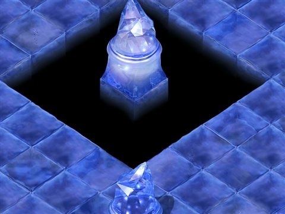
洛迅房間Lv 70～70
| 怪物 | Lv | 數量 | 出現位置 |
| 冰之女僕 | 70 | 13～21 | 範圍 (8,13)-(108,108) |
| 冰之阿朱瑪 | 70 | 13～21 | 範圍 (8,13)-(108,108) |
| 怨靈女僕 | 70 | 13～21 | 範圍 (8,13)-(108,108) |
| 怨靈貴族 | 70 | 1～4 | 範圍 (8,13)-(108,108) |
| 怨靈阿朱瑪 | 70 | 3～14 | 範圍 (8,13)-(108,108) |
| 紅色貴族 | 70 | 1～4 | 範圍 (8,13)-(108,108) |
| 紫色女僕 | 70 | 9～17 | 範圍 (8,13)-(108,108) |
| 紫色阿朱瑪 | 70 | 3～14 | 範圍 (8,13)-(108,108) |

瑪拉房間 wiki 資料Lv 70～70
| 怪物 | Lv | 數量 | 出現位置 |
| 冰之歐巴桑 | 70 | 3～14 | 範圍 (16,16)-(90,90) |
| 怨靈阿朱瑪 | 70 | 9～14 | 範圍 (16,16)-(90,90) |
| 紫色女僕 | 70 | 13～28 | 範圍 (16,16)-(90,90) |
| 紫色阿朱瑪 | 70 | 9～14 | 範圍 (16,16)-(90,90) |
亞德禮紛4層走廊2Lv 70～70
| 怪物 | Lv | 數量 | 出現位置 |
| 冰之女僕 | 70 | 15～40 | 範圍 (7,10)-(128,130) |
| 冰之阿朱瑪 | 70 | 15～40 | 範圍 (7,10)-(128,130) |
| 紫色女僕 | 70 | 15～40 | 範圍 (7,10)-(128,130) |
| 紫色阿朱瑪 | 70 | 15～40 | 範圍 (7,10)-(128,130) |
亞德禮紛4層走廊3Lv 70～70
| 怪物 | Lv | 數量 | 出現位置 |
| 冰之女僕 | 70 | 15～30 | 範圍 (14,116)-(137,137) |
| 冰之阿朱瑪 | 70 | 15～25 | 範圍 (14,116)-(137,137) |
| 怨靈女僕 | 70 | 15～25 | 範圍 (14,116)-(137,137) |
| 怨靈阿朱瑪 | 70 | 15～25 | 範圍 (14,116)-(137,137) |
| 紫色女僕 | 70 | 15～25 | 範圍 (14,116)-(137,137) |
| 紫色阿朱瑪 | 70 | 15～25 | 範圍 (14,116)-(137,137) |
亞德禮紛4層走廊4Lv 70～70
| 怪物 | Lv | 數量 | 出現位置 |
| 冰之女僕 | 70 | 15～40 | 範圍 (7,10)-(128,130) |
| 冰之阿朱瑪 | 70 | 15～40 | 範圍 (7,10)-(128,130) |
| 紫色女僕 | 70 | 15～40 | 範圍 (7,10)-(128,130) |
| 紫色阿朱瑪 | 70 | 15～40 | 範圍 (7,10)-(128,130) |

皮樂夏房間 wiki 資料Lv 70～70
| 怪物 | Lv | 數量 | 出現位置 |
| 冰之阿朱瑪 | 70 | 13～35 | 範圍 (10,11)-(108,110) |
| 冰霜貴族 | 70 | 3～7 | 範圍 (10,11)-(108,110) |
| 怨靈女僕 | 70 | 13～21 | 範圍 (10,11)-(108,110) |
| 怨靈貴族 | 70 | 2～5 | 範圍 (10,11)-(108,110) |
| 怨靈阿朱瑪 | 70 | 13～21 | 範圍 (10,11)-(108,110) |
| 紅色貴族 | 70 | 2～5 | 範圍 (10,11)-(108,110) |
| 紫色女僕 | 70 | 13～21 | 範圍 (10,11)-(108,110) |
| 紫色阿朱瑪 | 70 | 13～21 | 範圍 (10,11)-(108,110) |
西荷姆房間Lv 70～70
| 怪物 | Lv | 數量 | 出現位置 |
| 冰之女僕 | 70 | 18～28 | 範圍 (16,16)-(90,90) |
| 冰之歐巴桑 | 70 | 3～14 | 範圍 (16,16)-(90,90) |
| 怨靈阿朱瑪 | 70 | 9～14 | 範圍 (16,16)-(90,90) |
| 紫色阿朱瑪 | 70 | 9～21 | 範圍 (16,16)-(90,90) |
亞德禮紛4層走廊5Lv 70～70
| 怪物 | Lv | 數量 | 出現位置 |
| 冰之女僕 | 70 | 19～30 | 範圍 (14,17)-(137,139) |
| 冰之阿朱瑪 | 70 | 19～30 | 範圍 (14,17)-(137,139) |
| 怨靈女僕 | 70 | 19～30 | 範圍 (14,17)-(137,139) |
| 怨靈阿朱瑪 | 70 | 19～30 | 範圍 (14,17)-(137,139) |
| 紫色女僕 | 70 | 19～30 | 範圍 (14,17)-(137,139) |
| 紫色阿朱瑪 | 70 | 19～30 | 範圍 (14,17)-(137,139) |
斐拉房間Lv 70～70
| 怪物 | Lv | 數量 | 出現位置 |
| 冰之女僕 | 70 | 9～14 | 範圍 (10,10)-(108,106) |
| 冰之歐巴桑 | 70 | 3～14 | 範圍 (10,10)-(108,106) |
| 冰之阿朱瑪 | 70 | 9～14 | 範圍 (10,10)-(108,106) |
| 冰霜貴族 | 70 | 3～7 | 範圍 (10,10)-(108,106) |
| 怨靈女僕 | 70 | 13～14 | 範圍 (10,10)-(108,106) |
| 怨靈貴族 | 70 | 2～5 | 範圍 (10,10)-(108,106) |
| 怨靈阿朱瑪 | 70 | 7～14 | 範圍 (10,10)-(108,106) |
| 紅色貴族 | 70 | 2～5 | 範圍 (10,10)-(108,106) |
| 紫色女僕 | 70 | 9～17 | 範圍 (10,10)-(108,106) |
| 紫色阿朱瑪 | 70 | 9～17 | 範圍 (10,10)-(108,106) |
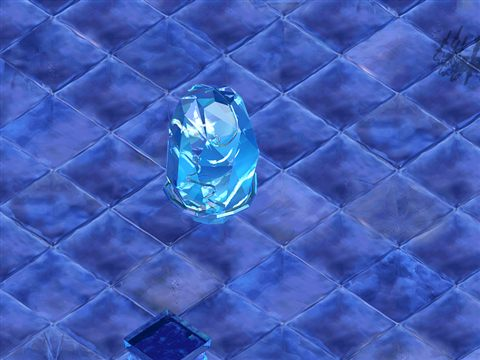
亞德禮紛5層Lv 70～70
| 怪物 | Lv | 數量 | 出現位置 |
 歐爾恩德米 歐爾恩德米 | 70 | 32～35 | 範圍 (10,23)-(187,174) |
 米拉克巴克斯 米拉克巴克斯 | 70 | 6～15 | 範圍 (10,23)-(187,174) |
 馬凱拉 馬凱拉 | 70 | 99～122 | 範圍 (10,23)-(187,174) |
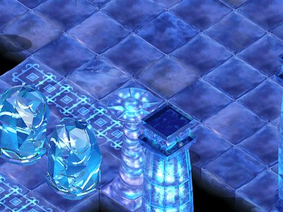
亞德禮紛6層Lv 70～70
| 怪物 | Lv | 數量 | 出現位置 |
 伊克勒斯 伊克勒斯 | 70 | 12～34 | 範圍 (13,13)-(186,183) |
| 怨靈馬凱拉 | 70 | 32～35 | 範圍 (13,13)-(186,183) |
| 米拉克巴克斯 | 70 | 6～15 | 範圍 (13,13)-(186,183) |
| 馬凱拉 | 70 | 99～122 | 範圍 (13,13)-(186,183) |
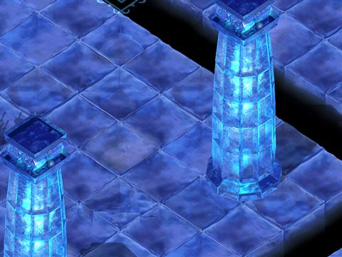
亞德禮紛7層Lv 70～70
| 怪物 | Lv | 數量 | 出現位置 |
| 歐爾恩德米 | 70 | 13～35 | 範圍 (18,21)-(182,182) |
| 米拉克巴克斯 | 70 | 6～15 | 範圍 (18,21)-(182,182) |
| 萊因波拉奇巴克斯 | 70 | 6～15 | 範圍 (18,21)-(182,182) |
 阿納坎 阿納坎 | 70 | 64～97 | 範圍 (18,21)-(182,182) |
| 馬凱拉 | 70 | 67～70 | 範圍 (18,21)-(182,182) |
亞德禮紛8層Lv 70～70
| 怪物 | Lv | 數量 | 出現位置 |
| 伊克勒斯 | 70 | 30～34 | 範圍 (9,13)-(182,181) |
| 歐爾恩德米 | 70 | 13～35 | 範圍 (9,13)-(182,181) |
| 萊因波拉奇巴克斯 | 70 | 6～15 | 範圍 (9,13)-(182,181) |
| 阿納坎 | 70 | 38～72 | 範圍 (9,13)-(182,181) |
| 馬凱拉 | 70 | 67～70 | 範圍 (9,13)-(182,181) |
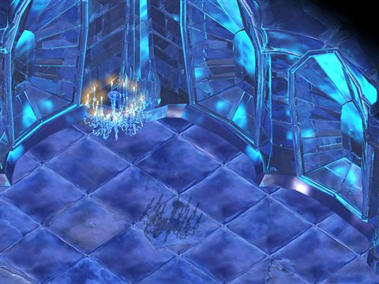
亞德禮紛9層Lv 70～70
| 怪物 | Lv | 數量 | 出現位置 |
| 怨靈伊克勒斯 | 70 | 31～35 | 範圍 (10,19)-(189,179) |
| 怨靈阿納坎 | 70 | 32～52 | 範圍 (10,19)-(189,179) |
| 怨靈馬凱拉 | 70 | 67～70 | 範圍 (10,19)-(189,179) |
| 歐爾恩德米 | 70 | 13～35 | 範圍 (10,19)-(189,179) |
| 萊因波拉奇巴克斯 | 70 | 10～20 | 範圍 (10,19)-(189,179) |
亞德禮紛露台Lv 70～70
| 怪物 | Lv | 數量 | 出現位置 |
 哥斯特女僕 哥斯特女僕 | 70 | 5～15 | 範圍 (5,5)-(12,12) |
| 萊德拉奇巴克斯 | 70 | 3～5 | 範圍 (11,11)-(15,15) |

亞德禮紛露台Lv 70～70
| 怪物 | Lv | 數量 | 出現位置 |
| 哥斯特女僕 | 70 | 5～15 | 範圍 (5,5)-(12,12) |
| 萊德拉奇巴克斯 | 70 | 3～5 | 範圍 (11,11)-(15,15) |

亞德禮紛露台Lv 70～70
| 怪物 | Lv | 數量 | 出現位置 |
| 哥斯特女僕 | 70 | 5～15 | 範圍 (5,5)-(12,12) |
| 萊德拉奇巴克斯 | 70 | 3～5 | 範圍 (11,11)-(15,15) |

亞德禮紛露台Lv 70～70
| 怪物 | Lv | 數量 | 出現位置 |
| 哥斯特女僕 | 70 | 5～15 | 範圍 (18,1)-(27,10) |
| 萊德拉奇巴克斯 | 70 | 3～5 | 範圍 (14,11)-(18,15) |
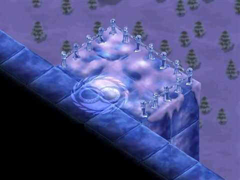
亞德禮紛露台Lv 70～70
| 怪物 | Lv | 數量 | 出現位置 |
| 哥斯特女僕 | 70 | 5～15 | 範圍 (18,1)-(27,10) |
| 萊德拉奇巴克斯 | 70 | 3～5 | 範圍 (14,11)-(18,15) |

亞德禮紛露台Lv 70～70
| 怪物 | Lv | 數量 | 出現位置 |
| 哥斯特女僕 | 70 | 5～15 | 範圍 (18,1)-(27,10) |
| 萊德拉奇巴克斯 | 70 | 3～5 | 範圍 (14,11)-(18,15) |

亞空間1Lv 70～70
| 怪物 | Lv | 數量 | 出現位置 |
| 哥斯特女僕 | 70 | 25～52 | 範圍 (8,9)-(190,190) |
| 萊因波拉奇巴克斯 | 70 | 10～20 | 範圍 (8,9)-(190,190) |
 阿波莉娜 阿波莉娜 | 70 | 52～70 | 範圍 (8,9)-(190,190) |
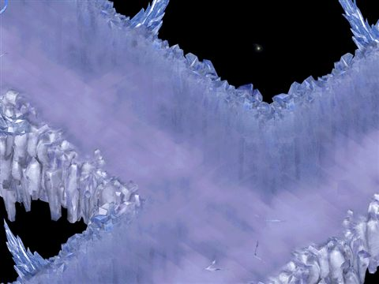
亞空間2Lv 70～70
| 怪物 | Lv | 數量 | 出現位置 |
| 哥斯特女僕 | 70 | 25～52 | 範圍 (8,9)-(190,190) |
| 萊因波拉奇巴克斯 | 70 | 10～20 | 範圍 (8,9)-(190,190) |
| 阿波莉娜 | 70 | 52～70 | 範圍 (8,9)-(190,190) |
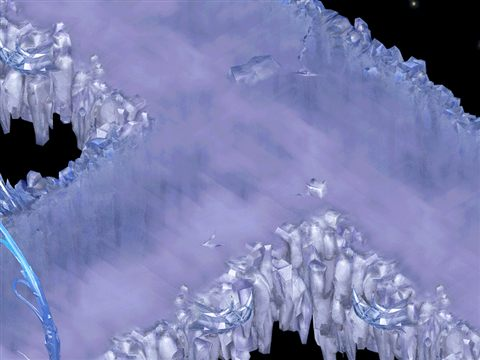
亞空間3Lv 70～70
| 怪物 | Lv | 數量 | 出現位置 |
| 哥斯特女僕 | 70 | 25～52 | 範圍 (8,9)-(190,190) |
| 萊因波拉奇巴克斯 | 70 | 10～20 | 範圍 (8,9)-(190,190) |
| 阿波莉娜 | 70 | 52～70 | 範圍 (8,9)-(190,190) |
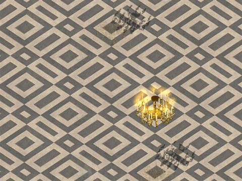
路爾斯城堡地城5Lv 70～70
| 怪物 | Lv | 數量 | 出現位置 |
| 怨靈劍士 | 70 | 9 | 整張地圖 |
| 怨靈女僕 | 70 | 8 | 整張地圖 |
| 怨靈槍兵 | 70 | 10 | 整張地圖 |
| 怨靈貴族 | 70 | 1 | 整張地圖 |
| 怨靈阿朱瑪 | 70 | 6～8 | 整張地圖 |

帕爾塞斯1 wiki 資料Lv 70～70
| 怪物 | Lv | 數量 | 出現位置 |
 夏摩可 夏摩可 | 70 | 12～21 | 範圍 (15,15)-(135,135) |
| 怨靈夏摩可 | 70 | 12～21 | 範圍 (15,15)-(135,135) |
 斯泰娜 斯泰娜 | 70 | 12～21 | 範圍 (15,15)-(135,135) |

帕爾塞斯2 wiki 資料Lv 70～70
| 怪物 | Lv | 數量 | 出現位置 |
| 夏摩可 | 70 | 12～21 | 範圍 (15,15)-(135,135) |
| 怨靈夏摩可 | 70 | 12～21 | 範圍 (15,15)-(135,135) |
| 斯泰娜 | 70 | 12～21 | 範圍 (15,15)-(135,135) |

帕爾塞斯3 wiki 資料Lv 70～70
| 怪物 | Lv | 數量 | 出現位置 |
| 夏摩可 | 70 | 12～21 | 範圍 (10,10)-(139,139) |
| 怨靈斯泰娜 | 70 | 12～21 | 範圍 (10,10)-(139,139) |
| 斯泰娜 | 70 | 12～21 | 範圍 (10,10)-(139,139) |

帕爾塞斯4 wiki 資料Lv 70～70
| 怪物 | Lv | 數量 | 出現位置 |
 安提拉凱農 安提拉凱農 | 70 | 12～21 | 範圍 (18,18)-(135,135) |
| 怨靈斯泰娜 | 70 | 12～21 | 範圍 (18,18)-(135,135) |
| 斯泰娜 | 70 | 12～21 | 範圍 (18,18)-(135,135) |

帕爾塞斯5 wiki 資料Lv 70～70
| 怪物 | Lv | 數量 | 出現位置 |
| 安提拉凱農 | 70 | 12～21 | 範圍 (20,20)-(130,130) |
| 怨靈安提拉凱農 | 70 | 12～21 | 範圍 (20,20)-(130,130) |
| 斯泰娜 | 70 | 12～21 | 範圍 (20,20)-(130,130) |

帕爾塞斯6 wiki 資料Lv 70～70
| 怪物 | Lv | 數量 | 出現位置 |
| 安提拉凱農 | 70 | 12～21 | 範圍 (17,15)-(130,130) |
| 怨靈安提拉凱農 | 70 | 12～21 | 範圍 (17,15)-(130,130) |
| 斯泰娜 | 70 | 12～21 | 範圍 (17,15)-(130,130) |
帕爾塞斯蘭西亞Lv 70～70
| 怪物 | Lv | 數量 | 出現位置 |
| 夏摩可 | 70 | 10～13 | 範圍 (10,13)-(89,88) |
| 安提拉凱農 | 70 | 10～13 | 範圍 (10,13)-(89,88) |
| 斯泰娜 | 70 | 10～13 | 範圍 (10,13)-(89,88) |
 蘭瑟亞 蘭瑟亞 | 70 | 1 | 定點 (50,50) |

帕爾塞斯地城核心1Lv 70～70
| 怪物 | Lv | 數量 | 出現位置 |
| 夏摩可 | 70 | 20～26 | 範圍 (12,13)-(83,82) |
| 怨靈夏摩可 | 70 | 20～26 | 範圍 (12,13)-(83,82) |
| 斯泰娜 | 70 | 20～26 | 範圍 (12,13)-(83,82) |

帕爾塞斯地城核心2Lv 70～70
| 怪物 | Lv | 數量 | 出現位置 |
| 夏摩可 | 70 | 10～13 | 範圍 (8,11)-(90,87) |
| 安提拉凱農 | 70 | 10～13 | 範圍 (8,11)-(90,87) |
| 怨靈斯泰娜 | 70 | 20～26 | 範圍 (8,11)-(90,87) |
| 斯泰娜 | 70 | 20～26 | 範圍 (8,11)-(90,87) |
帕爾塞斯地城核心3Lv 70～70
| 怪物 | Lv | 數量 | 出現位置 |
| 安提拉凱農 | 70 | 10～13 | 範圍 (10,10)-(85,85) |
| 怨靈安提拉凱農 | 70 | 20～26 | 範圍 (10,10)-(85,85) |
| 怨靈斯泰娜 | 70 | 10～13 | 範圍 (10,10)-(85,85) |
| 斯泰娜 | 70 | 20～26 | 範圍 (10,10)-(85,85) |

斯坎達倫1 wiki 資料Lv 70～70
| 怪物 | Lv | 數量 | 出現位置 |
 怨靈默斯基普 怨靈默斯基普 | 70 | 12～21 | 範圍 (15,15)-(135,135) |
 斯凱米格 斯凱米格 | 70 | 12～21 | 範圍 (15,15)-(135,135) |
| 默斯基普 | 70 | 12～21 | 範圍 (15,15)-(135,135) |

斯坎達倫2 wiki 資料Lv 70～70
| 怪物 | Lv | 數量 | 出現位置 |
| 怨靈默斯基普 | 70 | 12～21 | 範圍 (15,15)-(135,135) |
| 斯凱米格 | 70 | 12～21 | 範圍 (15,15)-(135,135) |
| 默斯基普 | 70 | 12～21 | 範圍 (15,15)-(135,135) |

斯坎達倫3 wiki 資料Lv 70～70
| 怪物 | Lv | 數量 | 出現位置 |
| 怨靈斯凱米格 | 70 | 12～21 | 範圍 (10,10)-(139,139) |
| 斯凱米格 | 70 | 12～21 | 範圍 (10,10)-(139,139) |
| 默斯基普 | 70 | 12～21 | 範圍 (10,10)-(139,139) |

斯坎達倫4 wiki 資料Lv 70～70
| 怪物 | Lv | 數量 | 出現位置 |
| 怨靈斯凱米格 | 70 | 12～21 | 範圍 (18,18)-(135,135) |
| 斯凱米格 | 70 | 12～21 | 範圍 (18,18)-(135,135) |
 阿米倫 阿米倫 | 70 | 12～21 | 範圍 (18,18)-(135,135) |

斯坎達倫5 wiki 資料Lv 70～70
| 怪物 | Lv | 數量 | 出現位置 |
| 怨靈阿米倫 | 70 | 12～21 | 範圍 (20,20)-(130,130) |
| 斯凱米格 | 70 | 12～21 | 範圍 (20,20)-(130,130) |
| 阿米倫 | 70 | 12～21 | 範圍 (20,20)-(130,130) |

斯坎達倫6 wiki 資料Lv 70～70
| 怪物 | Lv | 數量 | 出現位置 |
| 怨靈阿米倫 | 70 | 12～21 | 範圍 (17,15)-(130,130) |
| 斯凱米格 | 70 | 12～21 | 範圍 (17,15)-(130,130) |
| 阿米倫 | 70 | 12～21 | 範圍 (17,15)-(130,130) |
斯坎達倫安德拉斯Lv 70～70
| 怪物 | Lv | 數量 | 出現位置 |
 安德拉斯 安德拉斯 | 70 | 1 | 定點 (50,46) |
| 斯凱米格 | 70 | 10～13 | 範圍 (10,13)-(89,88) |
| 阿米倫 | 70 | 10～13 | 範圍 (10,13)-(89,88) |
| 默斯基普 | 70 | 10～13 | 範圍 (10,13)-(89,88) |

斯坎達倫地城核心1Lv 70～70
| 怪物 | Lv | 數量 | 出現位置 |
| 怨靈默斯基普 | 70 | 20～26 | 範圍 (12,13)-(83,82) |
| 斯凱米格 | 70 | 20～26 | 範圍 (12,13)-(83,82) |
| 默斯基普 | 70 | 20～26 | 範圍 (12,13)-(83,82) |

斯坎達倫地城核心2Lv 70～70
| 怪物 | Lv | 數量 | 出現位置 |
| 怨靈斯凱米格 | 70 | 20～26 | 範圍 (8,11)-(90,87) |
| 斯凱米格 | 70 | 20～26 | 範圍 (8,11)-(90,87) |
| 阿米倫 | 70 | 10～13 | 範圍 (8,11)-(90,87) |
| 默斯基普 | 70 | 10～13 | 範圍 (8,11)-(90,87) |
斯坎達倫地城核心3Lv 70～70
| 怪物 | Lv | 數量 | 出現位置 |
| 怨靈阿米倫 | 70 | 20～26 | 範圍 (10,10)-(85,85) |
| 斯凱米格 | 70 | 20～26 | 範圍 (10,10)-(85,85) |
| 阿米倫 | 70 | 20～26 | 範圍 (10,10)-(85,85) |
海賊村港口停泊場Lv 70～70
| 怪物 | Lv | 數量 | 出現位置 |
 雷皮恩獵人 雷皮恩獵人 | 70 | 3～4 | 範圍 (1,1)-(58,58) |
 雷皮恩追擊員 雷皮恩追擊員 | 70 | 3～4 | 範圍 (1,1)-(58,58) |


被遺忘的藏書庫3 wiki 資料Lv 72～84
| 怪物 | Lv | 數量 | 出現位置 |
| 黑色寶箱怪 | 72 | 1～2 | 範圍 (1,1)-(108,108) |
| 恐怖的掛鐘 | 82 | 8～12 | 範圍 (1,1)-(108,108) |
| 萬卷之書 | 82 | 8～12 | 範圍 (1,1)-(108,108) |
| 血染之書 | 84 | 8～12 | 範圍 (1,1)-(108,108) |
依卡魯斯火山1Lv 72～86
| 怪物 | Lv | 數量 | 出現位置 |
 三角龍 三角龍 | 72 | 23 | 整張地圖 |
| 三角龍 | 76 | 7 | 整張地圖 |
 蛋蛋三角龍 蛋蛋三角龍 | 78 | 23 | 整張地圖 |
| 蛋蛋三角龍 | 82 | 7 | 整張地圖 |
 飛天三角龍 飛天三角龍 | 84 | 23 | 整張地圖 |
| 蒂拉諾 | 86 | 1～4 | 整張地圖 |
| 飛天三角龍 | 86 | 7 | 整張地圖 |
路爾斯城堡地城2Lv 72～86
| 怪物 | Lv | 數量 | 出現位置 |
| 三角龍 | 72 | 10 | 整張地圖 |
| 蛋蛋三角龍 | 78 | 9 | 整張地圖 |
| 蛋蛋三角龍 | 80 | 8 | 整張地圖 |
| 飛天三角龍 | 84 | 6～8 | 整張地圖 |
| 蒂拉諾 | 86 | 2 | 整張地圖 |

帕爾塞斯7 wiki 資料Lv 72～72
| 怪物 | Lv | 數量 | 出現位置 |
| 赤紅夏摩可 | 72 | 13～19 | 範圍 (1,1)-(98,98) |
| 赤紅安提拉凱農 | 72 | 1～2 | 範圍 (1,1)-(98,98) |
| 赤紅斯泰娜 | 72 | 13～19 | 範圍 (1,1)-(98,98) |

斯坎達倫7 wiki 資料Lv 72～72
| 怪物 | Lv | 數量 | 出現位置 |
| 藍色阿米倫 | 72 | 1～2 | 範圍 (1,1)-(98,98) |
| 赤紅斯凱米格 | 72 | 13～18 | 範圍 (1,1)-(98,98) |
| 赤紅默斯基普 | 72 | 13～18 | 範圍 (1,1)-(98,98) |

克修倫1 wiki 資料Lv 72～72
| 怪物 | Lv | 數量 | 出現位置 |
 吉恩特 吉恩特 | 72 | 12～21 | 範圍 (15,15)-(135,135) |
 潔拉希 潔拉希 | 72 | 24～42 | 範圍 (15,15)-(135,135) |
 珍珠貝 珍珠貝 | 72 | 3～5 | 範圍 (15,15)-(135,135) |

克修倫2 wiki 資料Lv 72～72
| 怪物 | Lv | 數量 | 出現位置 |
| 吉恩特 | 72 | 12～21 | 範圍 (15,15)-(135,135) |
| 潔拉希 | 72 | 24～42 | 範圍 (15,15)-(135,135) |
| 珍珠貝 | 72 | 3～5 | 範圍 (15,15)-(135,135) |

克修倫3 wiki 資料Lv 72～72
| 怪物 | Lv | 數量 | 出現位置 |
| 不死潔拉希 | 72 | 12～21 | 範圍 (15,15)-(135,135) |
| 吉恩特 | 72 | 12～21 | 範圍 (15,15)-(135,135) |
 戈爾刺魟 戈爾刺魟 | 72 | 2～3 | 範圍 (15,15)-(135,135) |
 特里奧頓 特里奧頓 | 72 | 12～21 | 範圍 (15,15)-(135,135) |
| 珍珠貝 | 72 | 3～5 | 範圍 (15,15)-(135,135) |

克修倫4 wiki 資料Lv 72～72
| 怪物 | Lv | 數量 | 出現位置 |
| 不死潔拉希 | 72 | 12～21 | 範圍 (15,15)-(135,135) |
| 吉恩特 | 72 | 12～21 | 範圍 (15,15)-(135,135) |
| 戈爾刺魟 | 72 | 2～3 | 範圍 (15,15)-(135,135) |
 海鬱金香 海鬱金香 | 72 | 3～5 | 範圍 (15,15)-(135,135) |
| 特里奧頓 | 72 | 12～21 | 範圍 (15,15)-(135,135) |
| 珍珠貝 | 72 | 3～5 | 範圍 (15,15)-(135,135) |

克修倫5 wiki 資料Lv 72～72
| 怪物 | Lv | 數量 | 出現位置 |
| 不死吉恩特 | 72 | 12～21 | 範圍 (15,15)-(135,135) |
| 不死特里奧頓 | 72 | 12～21 | 範圍 (15,15)-(135,135) |
 利帕圖 利帕圖 | 72 | 2～3 | 範圍 (15,15)-(135,135) |
| 海鬱金香 | 72 | 3～5 | 範圍 (15,15)-(135,135) |
| 潔拉希 | 72 | 12～21 | 範圍 (15,15)-(135,135) |
| 珍珠貝 | 72 | 3～5 | 範圍 (15,15)-(135,135) |

克修倫6 wiki 資料Lv 72～72
| 怪物 | Lv | 數量 | 出現位置 |
| 不死戈爾刺魟 | 72 | 2～3 | 範圍 (15,15)-(135,135) |
| 不死特里奧頓 | 72 | 12～21 | 範圍 (15,15)-(135,135) |
| 利帕圖 | 72 | 2～3 | 範圍 (15,15)-(135,135) |
| 吉恩特 | 72 | 12～21 | 範圍 (15,15)-(135,135) |
| 海鬱金香 | 72 | 3～5 | 範圍 (15,15)-(135,135) |

克修倫7 wiki 資料Lv 72～72
| 怪物 | Lv | 數量 | 出現位置 |
| 不死利帕圖 | 72 | 2～3 | 範圍 (15,15)-(135,135) |
| 不死潔拉希 | 72 | 12～21 | 範圍 (15,15)-(135,135) |
| 吉恩特 | 72 | 12～21 | 範圍 (15,15)-(135,135) |
| 戈爾刺魟 | 72 | 2～3 | 範圍 (15,15)-(135,135) |
| 海鬱金香 | 72 | 3～5 | 範圍 (15,15)-(135,135) |
| 特里奧頓 | 72 | 12～21 | 範圍 (15,15)-(135,135) |
克修倫巴哈姆特Lv 72～72
| 怪物 | Lv | 數量 | 出現位置 |
 巴哈姆特 巴哈姆特 | 72 | 1 | 定點 (50,70) |

歐佩爾1 wiki 資料Lv 72～72
| 怪物 | Lv | 數量 | 出現位置 |
 地獄火 地獄火 | 72 | 24～42 | 範圍 (15,15)-(135,135) |
 天上寶箱 天上寶箱 | 72 | 3～5 | 範圍 (15,15)-(135,135) |
 焰尾蜥 焰尾蜥 | 72 | 12～21 | 範圍 (15,15)-(135,135) |

歐佩爾2 wiki 資料Lv 72～72
| 怪物 | Lv | 數量 | 出現位置 |
| 地獄火 | 72 | 24～42 | 範圍 (15,15)-(135,135) |
| 天上寶箱 | 72 | 3～5 | 範圍 (15,15)-(135,135) |
| 焰尾蜥 | 72 | 12～21 | 範圍 (15,15)-(135,135) |

歐佩爾3 wiki 資料Lv 72～72
| 怪物 | Lv | 數量 | 出現位置 |
| 不死地獄火 | 72 | 12～21 | 範圍 (15,15)-(135,135) |
| 天上寶箱 | 72 | 3～5 | 範圍 (15,15)-(135,135) |
 岩漿狂徒 岩漿狂徒 | 72 | 12～21 | 範圍 (15,15)-(135,135) |
 炎岩追獵者 炎岩追獵者 | 72 | 2～3 | 範圍 (15,15)-(135,135) |
| 焰尾蜥 | 72 | 12～21 | 範圍 (15,15)-(135,135) |

歐佩爾4 wiki 資料Lv 72～72
| 怪物 | Lv | 數量 | 出現位置 |
| 不死地獄火 | 72 | 12～21 | 範圍 (15,15)-(135,135) |
| 天上寶箱 | 72 | 3～5 | 範圍 (15,15)-(135,135) |
| 岩漿狂徒 | 72 | 12～21 | 範圍 (15,15)-(135,135) |
| 炎岩追獵者 | 72 | 2～3 | 範圍 (15,15)-(135,135) |
| 焰尾蜥 | 72 | 12～21 | 範圍 (15,15)-(135,135) |
 熔岩之手 熔岩之手 | 72 | 3～5 | 範圍 (15,15)-(135,135) |

歐佩爾5 wiki 資料Lv 72～72
| 怪物 | Lv | 數量 | 出現位置 |
| 不死岩漿狂徒 | 72 | 12～21 | 範圍 (15,15)-(135,135) |
| 不死焰尾蜥 | 72 | 12～21 | 範圍 (15,15)-(135,135) |
| 地獄火 | 72 | 12～21 | 範圍 (15,15)-(135,135) |
| 天上寶箱 | 72 | 3～5 | 範圍 (15,15)-(135,135) |
 火焰鳥 火焰鳥 | 72 | 2～3 | 範圍 (15,15)-(135,135) |
| 熔岩之手 | 72 | 3～5 | 範圍 (15,15)-(135,135) |

歐佩爾6 wiki 資料Lv 72～72
| 怪物 | Lv | 數量 | 出現位置 |
| 不死岩漿狂徒 | 72 | 12～21 | 範圍 (15,15)-(135,135) |
| 不死炎岩追獵者 | 72 | 2～3 | 範圍 (15,15)-(135,135) |
| 火焰鳥 | 72 | 2～3 | 範圍 (15,15)-(135,135) |
| 焰尾蜥 | 72 | 12～21 | 範圍 (15,15)-(135,135) |
| 熔岩之手 | 72 | 3～5 | 範圍 (15,15)-(135,135) |

歐佩爾7 wiki 資料Lv 72～72
| 怪物 | Lv | 數量 | 出現位置 |
| 不死地獄火 | 72 | 12～21 | 範圍 (15,15)-(135,135) |
| 不死火焰鳥 | 72 | 2～3 | 範圍 (15,15)-(135,135) |
| 岩漿狂徒 | 72 | 12～21 | 範圍 (15,15)-(135,135) |
| 炎岩追獵者 | 72 | 2～3 | 範圍 (15,15)-(135,135) |
| 焰尾蜥 | 72 | 12～21 | 範圍 (15,15)-(135,135) |
| 熔岩之手 | 72 | 3～5 | 範圍 (15,15)-(135,135) |
歐佩爾沙羅曼達Lv 72～72
| 怪物 | Lv | 數量 | 出現位置 |
 沙羅曼達 沙羅曼達 | 72 | 1 | 定點 (55,75) |

歐佩爾地城核心3Lv 72～120
| 怪物 | Lv | 數量 | 出現位置 |
| 沙羅曼達 | 72 | 1 | 定點 (50,52) |
| 不死地獄火 | 120 | 10～14 | 範圍 (1,1)-(98,98) |
| 不死岩漿狂徒 | 120 | 10～14 | 範圍 (1,1)-(98,98) |
| 地獄火 | 120 | 10～14 | 範圍 (1,1)-(98,98) |
| 天上寶箱 | 120 | 4 | 範圍 (1,1)-(98,98) |
| 火焰鳥 | 120 | 2～3 | 範圍 (1,1)-(98,98) |
| 炎岩追獵者 | 120 | 2～3 | 範圍 (1,1)-(98,98) |
| 焰尾蜥 | 120 | 10～14 | 範圍 (1,1)-(98,98) |
| 熔岩之手 | 120 | 4 | 範圍 (1,1)-(98,98) |


依卡魯斯火山2Lv 74～86
| 怪物 | Lv | 數量 | 出現位置 |
| 三角龍 | 74 | 23 | 整張地圖 |
| 三角龍 | 76 | 7 | 整張地圖 |
| 蛋蛋三角龍 | 80 | 23 | 整張地圖 |
| 蛋蛋三角龍 | 82 | 7 | 整張地圖 |
| 飛天三角龍 | 85 | 23 | 整張地圖 |
| 蒂拉諾 | 86 | 2～7 | 整張地圖 |
| 飛天三角龍 | 86 | 7 | 整張地圖 |


格亨納1樓大廳 wiki 資料Lv 74～74
| 怪物 | Lv | 數量 | 出現位置 |
 狂信者 狂信者 | 74 | 6～11 | 範圍 (8,16)-(111,115) |
 鋼鐵狂戰士 鋼鐵狂戰士 | 74 | 6～11 | 範圍 (8,16)-(111,115) |
 骷髏守衛 骷髏守衛 | 74 | 6～11 | 範圍 (8,16)-(111,115) |

格亨納2樓監獄 wiki 資料Lv 74～74
| 怪物 | Lv | 數量 | 出現位置 |
 廢墟鳳凰 廢墟鳳凰 | 74 | 8～15 | 範圍 (16,20)-(135,140) |
 泥人 泥人 | 74 | 8～15 | 範圍 (16,20)-(135,140) |
| 狂信者 | 74 | 8～15 | 範圍 (16,20)-(135,140) |
| 骷髏大師 | 74 | 1 | 範圍 (16,20)-(135,140) |
| 骷髏守衛 | 74 | 8～15 | 範圍 (16,20)-(135,140) |

格亨納3樓監獄 wiki 資料Lv 74～74
| 怪物 | Lv | 數量 | 出現位置 |
 地獄三頭犬 地獄三頭犬 | 74 | 8～15 | 範圍 (15,19)-(135,140) |
 守衛塔 守衛塔 | 74 | 3 | 範圍 (15,19)-(135,140) |
| 泥人 | 74 | 8～15 | 範圍 (15,19)-(135,140) |
| 骷髏騎士 | 74 | 8～15 | 範圍 (15,19)-(135,140) |
 黑暗賢者 黑暗賢者 | 74 | 1 | 範圍 (15,19)-(135,140) |

格亨納4樓監獄 wiki 資料Lv 74～74
| 怪物 | Lv | 數量 | 出現位置 |
| 地獄三頭犬 | 74 | 9～15 | 範圍 (12,19)-(137,141) |
| 守衛塔 | 74 | 3 | 範圍 (12,19)-(137,141) |
| 廢墟鳳凰 | 74 | 9～15 | 範圍 (12,19)-(137,141) |
| 鋼鐵狂戰士 | 74 | 9～15 | 範圍 (12,19)-(137,141) |
| 骷髏大師 | 74 | 1 | 範圍 (12,19)-(137,141) |
| 黑暗賢者 | 74 | 1 | 範圍 (12,19)-(137,141) |

格亨納5樓監獄 wiki 資料Lv 74～74
| 怪物 | Lv | 數量 | 出現位置 |
| 地獄三頭犬 | 74 | 9～15 | 範圍 (12,17)-(137,141) |
| 守衛塔 | 74 | 3 | 範圍 (12,17)-(137,141) |
| 狂信者 | 74 | 9～15 | 範圍 (12,17)-(137,141) |
| 骷髏大師 | 74 | 1 | 範圍 (12,17)-(137,141) |
| 黑暗賢者 | 74 | 1 | 範圍 (12,17)-(137,141) |


格亨納獎勵關1 wiki 資料Lv 74～74
| 怪物 | Lv | 數量 | 出現位置 |
| 地獄三頭犬 | 74 | 3～4 | 範圍 (1,1)-(98,98) |
| 廢墟鳳凰 | 74 | 3～4 | 範圍 (1,1)-(98,98) |
| 格亨納寶箱 | 74 | 5 | 範圍 (1,1)-(98,98) |
| 泥人 | 74 | 3～4 | 範圍 (1,1)-(98,98) |
| 狂信者 | 74 | 3～4 | 範圍 (1,1)-(98,98) |
| 鋼鐵狂戰士 | 74 | 3～4 | 範圍 (1,1)-(98,98) |
| 骷髏大師 | 74 | 1～2 | 範圍 (1,1)-(98,98) |
| 骷髏守衛 | 74 | 3～4 | 範圍 (1,1)-(98,98) |

格亨納獎勵關2 wiki 資料Lv 74～74
| 怪物 | Lv | 數量 | 出現位置 |
| 地獄三頭犬 | 74 | 3～4 | 範圍 (1,1)-(98,98) |
| 廢墟鳳凰 | 74 | 3～4 | 範圍 (1,1)-(98,98) |
| 泥人 | 74 | 3～4 | 範圍 (1,1)-(98,98) |
| 狂信者 | 74 | 3～4 | 範圍 (1,1)-(98,98) |
| 鋼鐵狂戰士 | 74 | 3～4 | 範圍 (1,1)-(98,98) |
| 骷髏守衛 | 74 | 3～4 | 範圍 (1,1)-(98,98) |
| 骷髏騎士 | 74 | 3～4 | 範圍 (1,1)-(98,98) |
| 黑暗賢者 | 74 | 1～2 | 範圍 (1,1)-(98,98) |

格亨納獎勵關3 wiki 資料Lv 74～74
| 怪物 | Lv | 數量 | 出現位置 |
| 地獄三頭犬 | 74 | 4～5 | 範圍 (1,1)-(98,98) |
| 廢墟鳳凰 | 74 | 4～5 | 範圍 (1,1)-(98,98) |
| 泥人 | 74 | 4～5 | 範圍 (1,1)-(98,98) |
| 狂信者 | 74 | 4～5 | 範圍 (1,1)-(98,98) |
 緹亞潔 緹亞潔 | 74 | 1 | 定點 (50,50) |
| 鋼鐵狂戰士 | 74 | 4～5 | 範圍 (1,1)-(98,98) |
| 骷髏大師 | 74 | 1～2 | 範圍 (1,1)-(98,98) |
| 黑暗賢者 | 74 | 1～2 | 範圍 (1,1)-(98,98) |

露米娜神殿碼頭Lv 74～74
| 怪物 | Lv | 數量 | 出現位置 |
 阿努比亞斯 阿努比亞斯 | 74 | 3～4 | 範圍 (8,9)-(60,47) |

露米娜神殿1樓 wiki 資料Lv 74～74
| 怪物 | Lv | 數量 | 出現位置 |
 巨齒鯊砲 巨齒鯊砲 | 74 | 4～6 | 範圍 (12,13)-(87,87) |
 烏爾修萊因 烏爾修萊因 | 74 | 1 | 範圍 (12,13)-(87,87) |
| 阿努比亞斯 | 74 | 4～6 | 範圍 (12,13)-(87,87) |

露米娜神殿謁見之間1 wiki 資料Lv 74～74
| 怪物 | Lv | 數量 | 出現位置 |
| 巨齒鯊砲 | 74 | 4～7 | 範圍 (9,9)-(89,89) |
 樹精 樹精 | 74 | 4～7 | 範圍 (9,9)-(89,89) |
| 烏爾修萊因 | 74 | 1 | 範圍 (9,9)-(89,89) |


露米娜神殿懺悔室1 wiki 資料Lv 74～74
| 怪物 | Lv | 數量 | 出現位置 |
 卡皮歐 卡皮歐 | 74 | 15 | 範圍 (9,9)-(89,89) |
| 樹精 | 74 | 20 | 範圍 (9,9)-(89,89) |
| 烏爾修萊因 | 74 | 10 | 範圍 (9,9)-(89,89) |

露米娜神殿懺悔室2 wiki 資料Lv 74～74
| 怪物 | Lv | 數量 | 出現位置 |
| 卡皮歐 | 74 | 4～7 | 範圍 (9,9)-(89,89) |
 帕斯托爾 帕斯托爾 | 74 | 1 | 範圍 (9,9)-(89,89) |
| 樹精 | 74 | 4～7 | 範圍 (9,9)-(89,89) |

露米娜神殿懺悔室3 wiki 資料Lv 74～74
| 怪物 | Lv | 數量 | 出現位置 |
| 卡皮歐 | 74 | 4～7 | 範圍 (9,10)-(89,89) |
| 帕斯托爾 | 74 | 1 | 範圍 (9,10)-(89,89) |
| 阿努比亞斯 | 74 | 4～7 | 範圍 (9,10)-(89,89) |

露米娜神殿懺悔室4 wiki 資料Lv 74～74
| 怪物 | Lv | 數量 | 出現位置 |
| 卡皮歐 | 74 | 4～7 | 範圍 (9,10)-(89,89) |
| 帕斯托爾 | 74 | 1 | 範圍 (9,10)-(89,89) |
| 烏爾修萊因 | 74 | 1 | 範圍 (9,10)-(89,89) |
 爬行貝 爬行貝 | 74 | 4～7 | 範圍 (9,10)-(89,89) |

露米娜獎勵關1 wiki 資料Lv 74～74
| 怪物 | Lv | 數量 | 出現位置 |
| 卡皮歐 | 74 | 3～4 | 範圍 (1,1)-(98,98) |
| 巨齒鯊砲 | 74 | 3～4 | 範圍 (1,1)-(98,98) |
| 帕斯托爾 | 74 | 1～2 | 範圍 (1,1)-(98,98) |
| 樹精 | 74 | 3～4 | 範圍 (1,1)-(98,98) |
| 烏爾修萊因 | 74 | 3～4 | 範圍 (1,1)-(98,98) |
| 爬行貝 | 74 | 3～4 | 範圍 (1,1)-(98,98) |
| 阿努比亞斯 | 74 | 3～4 | 範圍 (1,1)-(98,98) |
| 露米娜寶箱 | 74 | 5 | 範圍 (1,1)-(98,98) |

露米娜獎勵關2 wiki 資料Lv 74～74
| 怪物 | Lv | 數量 | 出現位置 |
| 卡皮歐 | 74 | 3～4 | 範圍 (1,1)-(98,98) |
| 巨齒鯊砲 | 74 | 3～4 | 範圍 (1,1)-(98,98) |
| 帕斯托爾 | 74 | 1～2 | 範圍 (1,1)-(98,98) |
| 樹精 | 74 | 3～4 | 範圍 (1,1)-(98,98) |
| 烏爾修萊因 | 74 | 3～4 | 範圍 (1,1)-(98,98) |
| 爬行貝 | 74 | 3～4 | 範圍 (1,1)-(98,98) |
| 阿努比亞斯 | 74 | 3～4 | 範圍 (1,1)-(98,98) |

露米娜獎勵關3 wiki 資料Lv 74～74
| 怪物 | Lv | 數量 | 出現位置 |
| 卡皮歐 | 74 | 3～4 | 範圍 (1,1)-(98,98) |
| 巨齒鯊砲 | 74 | 3～4 | 範圍 (1,1)-(98,98) |
| 帕斯托爾 | 74 | 1～2 | 範圍 (1,1)-(98,98) |
| 樹精 | 74 | 3～4 | 範圍 (1,1)-(98,98) |
| 烏爾修萊因 | 74 | 3～4 | 範圍 (1,1)-(98,98) |
| 爬行貝 | 74 | 3～4 | 範圍 (1,1)-(98,98) |
| 阿努比亞斯 | 74 | 3～4 | 範圍 (1,1)-(98,98) |
 阿瑟拉 阿瑟拉 | 74 | 1 | 定點 (50,50) |


諾克斯要塞 wiki 資料Lv 76～82
| 怪物 | Lv | 數量 | 出現位置 |
| 精英蟲 | 76 | 7～10 | 範圍 (1,1)-(186,136) |
| 精英猴 | 80 | 7～10 | 範圍 (1,1)-(186,136) |
| 金屬猴 | 82 | 7～10 | 範圍 (1,1)-(186,136) |

莉希涅1 wiki 資料Lv 76～76
| 怪物 | Lv | 數量 | 出現位置 |
| [哈比] | 76 | 12～21 | 範圍 (10,10)-(140,140) |
 哈比 哈比 | 76 | 12～21 | 範圍 (10,10)-(140,140) |
 哈比之卵 哈比之卵 | 76 | 4～6 | 範圍 (10,10)-(140,140) |
 水之精靈 水之精靈 | 76 | 12～21 | 範圍 (10,10)-(140,140) |

莉希涅2 wiki 資料Lv 76～76
| 怪物 | Lv | 數量 | 出現位置 |
| [哈比] | 76 | 12～21 | 範圍 (10,10)-(140,140) |
| 哈比之卵 | 76 | 4～6 | 範圍 (10,10)-(140,140) |
| 突變水之精靈 | 76 | 12～21 | 範圍 (10,10)-(140,140) |
| 血之哈比 | 76 | 12～21 | 範圍 (10,10)-(140,140) |

莉希涅3 wiki 資料Lv 76～76
| 怪物 | Lv | 數量 | 出現位置 |
| [哈比] | 76 | 7～13 | 範圍 (10,10)-(140,140) |
| [水之精靈] | 76 | 7～13 | 範圍 (10,10)-(140,140) |
| [莉希涅]結界 | 76 | 1 | 定點 (30,35) |
| [血之哈比] | 76 | 7～13 | 範圍 (10,10)-(140,140) |
| 哈比之卵 | 76 | 8～12 | 範圍 (10,10)-(140,140) |
| 狂怒哈比 | 76 | 7～13 | 範圍 (10,10)-(140,140) |
| 血之哈比 | 76 | 7～13 | 範圍 (10,10)-(140,140) |

莉希涅要塞1 wiki 資料Lv 76～76
| 怪物 | Lv | 數量 | 出現位置 |
 神聖奧貝爾 神聖奧貝爾 | 76 | 12～21 | 範圍 (10,10)-(110,110) |
 羅剎之聖天使女武神 羅剎之聖天使女武神 | 76 | 12～21 | 範圍 (10,10)-(110,110) |
 莉希涅守衛 莉希涅守衛 | 76 | 12～21 | 範圍 (10,10)-(110,110) |
 莉希涅水晶 莉希涅水晶 | 76 | 4～6 | 範圍 (10,10)-(110,110) |

莉希涅要塞2 wiki 資料Lv 76～76
| 怪物 | Lv | 數量 | 出現位置 |
| [神聖奧貝爾] | 76 | 9～16 | 範圍 (10,10)-(110,110) |
| 神聖奧貝爾 | 76 | 9～16 | 範圍 (10,10)-(110,110) |
| 聖天使女武神 | 76 | 9～16 | 範圍 (10,10)-(110,110) |
| 莉希涅守衛長 | 76 | 9～16 | 範圍 (10,10)-(110,110) |
| 莉希涅水晶 | 76 | 4～6 | 範圍 (10,10)-(110,110) |

莉希涅要塞3 wiki 資料Lv 76～76
| 怪物 | Lv | 數量 | 出現位置 |
| [神聖奧貝爾] | 76 | 9～16 | 範圍 (10,10)-(110,110) |
 天使之翼守護者 天使之翼守護者 | 76 | 1～2 | 範圍 (10,10)-(110,110) |
 神聖靈魂毀滅者 神聖靈魂毀滅者 | 76 | 9～16 | 範圍 (10,10)-(110,110) |
| 莉希涅水晶 | 76 | 4～6 | 範圍 (10,10)-(110,110) |
| 莉希涅皇家守衛 | 76 | 9～16 | 範圍 (10,10)-(110,110) |
| 蒼天之聖天使女武神 | 76 | 9～16 | 範圍 (10,10)-(110,110) |

莉希涅聖光之門 wiki 資料Lv 76～76
| 怪物 | Lv | 數量 | 出現位置 |
| [神聖奧貝爾] | 76 | 12～21 | 範圍 (8,8)-(92,92) |
| [神聖靈魂毀滅者] | 76 | 12～21 | 範圍 (8,8)-(92,92) |
| 天使之翼守護者（綠） | 76 | 1～2 | 範圍 (8,8)-(92,92) |
| 天使之翼守護者（赤） | 76 | 1～2 | 範圍 (8,8)-(92,92) |
| 聖天使女武神領主 | 76 | 12～21 | 範圍 (8,8)-(92,92) |
| 莉希涅水晶 | 76 | 4～6 | 範圍 (8,8)-(92,92) |
 蒼炎聖天使特歐 蒼炎聖天使特歐 | 76 | 1 | 定點 (50,50) |

戴莫尼翁1 wiki 資料Lv 76～76
| 怪物 | Lv | 數量 | 出現位置 |
| [石像鬼] | 76 | 12～21 | 範圍 (10,10)-(140,140) |
 泥沼精靈 泥沼精靈 | 76 | 12～21 | 範圍 (10,10)-(140,140) |
 石像鬼 石像鬼 | 76 | 12～21 | 範圍 (10,10)-(140,140) |
 石像鬼雕像 石像鬼雕像 | 76 | 4～6 | 範圍 (10,10)-(140,140) |

戴莫尼翁2 wiki 資料Lv 76～76
| 怪物 | Lv | 數量 | 出現位置 |
| [石像鬼] | 76 | 12～21 | 範圍 (10,10)-(140,140) |
| 石像鬼雕像 | 76 | 4～6 | 範圍 (10,10)-(140,140) |
| 突變泥沼精靈 | 76 | 12～21 | 範圍 (10,10)-(140,140) |
| 血之石像鬼 | 76 | 12～21 | 範圍 (10,10)-(140,140) |

戴莫尼翁3 wiki 資料Lv 76～76
| 怪物 | Lv | 數量 | 出現位置 |
| [戴莫尼翁]結界 | 76 | 1 | 定點 (118,16) |
| [泥沼精靈] | 76 | 7～13 | 範圍 (10,10)-(140,140) |
| [石像鬼] | 76 | 7～13 | 範圍 (10,10)-(140,140) |
| [血之石像鬼] | 76 | 7～13 | 範圍 (10,10)-(140,140) |
| 布倫吉特石像鬼 | 76 | 7～13 | 範圍 (10,10)-(140,140) |
| 石像鬼雕像 | 76 | 8～12 | 範圍 (10,10)-(140,140) |
| 血之石像鬼 | 76 | 7～13 | 範圍 (10,10)-(140,140) |

戴莫尼翁堡壘1 wiki 資料Lv 76～76
| 怪物 | Lv | 數量 | 出現位置 |
 冥界之墮天使女武神 冥界之墮天使女武神 | 76 | 12～21 | 範圍 (10,10)-(110,110) |
 戴莫尼翁守衛 戴莫尼翁守衛 | 76 | 12～21 | 範圍 (10,10)-(110,110) |
 戴莫尼翁水晶 戴莫尼翁水晶 | 76 | 4～6 | 範圍 (10,10)-(110,110) |
 黑暗奧貝爾 黑暗奧貝爾 | 76 | 12～21 | 範圍 (10,10)-(110,110) |

戴莫尼翁堡壘2 wiki 資料Lv 76～76
| 怪物 | Lv | 數量 | 出現位置 |
| [黑暗奧貝爾] | 76 | 9～16 | 範圍 (10,10)-(110,110) |
| 墮天使女武神 | 76 | 9～16 | 範圍 (10,10)-(110,110) |
| 戴莫尼翁守衛長 | 76 | 9～16 | 範圍 (10,10)-(110,110) |
| 戴莫尼翁水晶 | 76 | 4～6 | 範圍 (10,10)-(110,110) |
| 黑暗奧貝爾 | 76 | 9～16 | 範圍 (10,10)-(110,110) |

戴莫尼翁堡壘3 wiki 資料Lv 76～76
| 怪物 | Lv | 數量 | 出現位置 |
| 戴莫尼翁水晶 | 76 | 4～6 | 範圍 (10,10)-(110,110) |
| 戴莫尼翁皇家守衛 | 76 | 12～21 | 範圍 (10,10)-(110,110) |
 暗翼守護者（赤） 暗翼守護者（赤） | 76 | 1～2 | 範圍 (10,10)-(110,110) |
| 暗黑之墮天使女武神 | 76 | 12～21 | 範圍 (10,10)-(110,110) |
 黑暗靈魂毀滅者 黑暗靈魂毀滅者 | 76 | 12～21 | 範圍 (10,10)-(110,110) |

戴莫尼翁神聖之門 wiki 資料Lv 76～76
| 怪物 | Lv | 數量 | 出現位置 |
| [黑暗靈魂毀滅者] | 76 | 18～32 | 範圍 (8,8)-(92,92) |
| 墮天使女武神領主 | 76 | 18～32 | 範圍 (8,8)-(92,92) |
| 戴莫尼翁水晶 | 76 | 4～6 | 範圍 (8,8)-(92,92) |
| 暗翼守護者（黃） | 76 | 1～2 | 範圍 (8,8)-(92,92) |
| 暗翼守護者（黑） | 76 | 1～2 | 範圍 (8,8)-(92,92) |
 漆黑之闇德拉菲斯 漆黑之闇德拉菲斯 | 76 | 1 | 定點 (50,50) |


東方鐵甲船2-1 wiki 資料Lv 78～84
| 怪物 | Lv | 數量 | 出現位置 |
| 金屬蟲 | 78 | 10～14 | 範圍 (1,1)-(128,128) |
 賽帕皮格 賽帕皮格 | 81 | 10～14 | 範圍 (1,1)-(128,128) |
 賽帕砲皮格 賽帕砲皮格 | 84 | 10～14 | 範圍 (1,1)-(128,128) |

東方鐵甲船3-1 wiki 資料Lv 78～86
| 怪物 | Lv | 數量 | 出現位置 |
| 金屬蟲 | 78 | 10～14 | 範圍 (1,1)-(128,128) |
| 賽帕皮格 | 81 | 10～14 | 範圍 (1,1)-(128,128) |
| 精英砲皮格 | 86 | 10～14 | 範圍 (1,1)-(128,128) |

東方鐵甲船4-1 wiki 資料Lv 78～86
| 怪物 | Lv | 數量 | 出現位置 |
| 金屬蟲 | 78 | 10～14 | 範圍 (1,1)-(128,128) |
| 精英皮格 | 83 | 10～14 | 範圍 (1,1)-(128,128) |
| 精英砲皮格 | 86 | 10～14 | 範圍 (1,1)-(128,128) |

東方鐵甲船5-1 wiki 資料Lv 78～86
| 怪物 | Lv | 數量 | 出現位置 |
| 金屬蟲 | 78 | 10～14 | 範圍 (1,1)-(128,128) |
| 金屬皮格 | 85 | 10～14 | 範圍 (1,1)-(128,128) |
| 精英砲皮格 | 86 | 10～14 | 範圍 (1,1)-(128,128) |

東方鐵甲船6-1 wiki 資料Lv 78～88
| 怪物 | Lv | 數量 | 出現位置 |
| 金屬蟲 | 78 | 10～14 | 範圍 (1,1)-(128,128) |
| 金屬皮格 | 85 | 10～14 | 範圍 (1,1)-(128,128) |
| 金屬砲皮格 | 88 | 10～14 | 範圍 (1,1)-(128,128) |


東方鐵甲船6-2 wiki 資料Lv 85～95
| 怪物 | Lv | 數量 | 出現位置 |
| 金屬皮格 | 85 | 7～10 | 範圍 (1,1)-(118,118) |
 金屬騎蟲皮格 金屬騎蟲皮格 | 90 | 7～10 | 範圍 (1,1)-(118,118) |
 吉爾塔布莉露 吉爾塔布莉露 | 95 | 1 | 定點 (60,60) |
愛麗絲第1-1區Lv 85～85
| 怪物 | Lv | 數量 | 出現位置 |
| 紅磚士兵 | 85 | 24 | 範圍 (16,66)-(105,66) |
愛麗絲第1-2區Lv 85～85
| 怪物 | Lv | 數量 | 出現位置 |
| 格林卡德曼 | 85 | 19 | 範圍 (16,66)-(105,66) |
| 珀普卡德曼 | 85 | 5 | 範圍 (16,66)-(105,66) |
愛麗絲第1-3區Lv 85～85
| 怪物 | Lv | 數量 | 出現位置 |
| 布雷克卡德曼 | 85 | 19 | 範圍 (16,66)-(105,66) |
| 布魯卡德曼 | 85 | 5 | 範圍 (16,66)-(105,66) |
愛麗絲第1-4區Lv 85～85
| 怪物 | Lv | 數量 | 出現位置 |
 波特切斯曼 波特切斯曼 | 85 | 19 | 範圍 (16,66)-(105,66) |
| 魯克切斯曼 | 85 | 5 | 範圍 (16,66)-(105,66) |
愛麗絲第1-5區Lv 85～85
| 怪物 | Lv | 數量 | 出現位置 |
| 切斯曼騎士 | 85 | 5 | 範圍 (16,66)-(105,66) |
| 比夏普切斯曼 | 85 | 19 | 範圍 (16,66)-(105,66) |

愛麗絲第2-1區Lv 85～85
| 怪物 | Lv | 數量 | 出現位置 |
| 紅磚士兵 | 85 | 24 | 範圍 (16,66)-(105,66) |
愛麗絲第2-2區Lv 85～85
| 怪物 | Lv | 數量 | 出現位置 |
| 格林卡德曼 | 85 | 19 | 範圍 (16,66)-(105,66) |
| 珀普卡德曼 | 85 | 5 | 範圍 (16,66)-(105,66) |
愛麗絲第2-3區Lv 85～85
| 怪物 | Lv | 數量 | 出現位置 |
| 布雷克卡德曼 | 85 | 19 | 範圍 (16,66)-(105,66) |
| 布魯卡德曼 | 85 | 5 | 範圍 (16,66)-(105,66) |
愛麗絲第2-4區Lv 85～85
| 怪物 | Lv | 數量 | 出現位置 |
| 波特切斯曼 | 85 | 19 | 範圍 (16,66)-(105,66) |
| 魯克切斯曼 | 85 | 5 | 範圍 (16,66)-(105,66) |
愛麗絲第2-5區Lv 85～95
| 怪物 | Lv | 數量 | 出現位置 |
| 切斯曼騎士 | 85 | 5 | 範圍 (16,66)-(105,66) |
| 比夏普切斯曼 | 85 | 19 | 範圍 (16,66)-(105,66) |
 愛麗絲 愛麗絲 | 95 | 1 | 整張地圖 |
無名島Lv 86～87
| 怪物 | Lv | 數量 | 出現位置 |
 野猴（桃） 野猴（桃） | 86 | 20～28 | 範圍 (1,1)-(148,148) |
| 野猴（灰） | 86 | 20～28 | 範圍 (1,1)-(148,148) |
 野花 野花 | 87 | 20～28 | 範圍 (1,1)-(148,148) |
 野鳥 野鳥 | 87 | 20～28 | 範圍 (1,1)-(148,148) |
火山洞窟1Lv 89～92
| 怪物 | Lv | 數量 | 出現位置 |
| 野鳥 | 89 | 24～34 | 範圍 (1,1)-(198,198) |
 哥布林兵（黃） 哥布林兵（黃） | 90 | 24～34 | 範圍 (1,1)-(198,198) |
| 哥布林兵（綠） | 91 | 24～34 | 範圍 (1,1)-(198,198) |
 火龍守護者 火龍守護者 | 92 | 4～6 | 範圍 (1,1)-(198,198) |
火山洞窟2Lv 89～92
| 怪物 | Lv | 數量 | 出現位置 |
| 野鳥 | 89 | 27～38 | 範圍 (1,1)-(198,198) |
| 哥布林兵（黃） | 90 | 27～38 | 範圍 (1,1)-(198,198) |
| 哥布林兵（綠） | 91 | 27～38 | 範圍 (1,1)-(198,198) |
| 火龍守護者 | 92 | 5～7 | 範圍 (1,1)-(198,198) |
火山洞窟3Lv 89～92
| 怪物 | Lv | 數量 | 出現位置 |
| 野鳥 | 89 | 24～35 | 範圍 (1,1)-(198,198) |
| 哥布林兵（黃） | 90 | 24～35 | 範圍 (1,1)-(198,198) |
| 哥布林兵（綠） | 91 | 24～35 | 範圍 (1,1)-(198,198) |
| 火龍守護者 | 92 | 4～6 | 範圍 (1,1)-(198,198) |
火山洞窟4Lv 89～92
| 怪物 | Lv | 數量 | 出現位置 |
| 野鳥 | 89 | 21～30 | 範圍 (1,1)-(198,198) |
| 哥布林兵（黃） | 90 | 21～30 | 範圍 (1,1)-(198,198) |
| 哥布林兵（綠） | 91 | 21～30 | 範圍 (1,1)-(198,198) |
| 火龍守護者 | 92 | 4～5 | 範圍 (1,1)-(198,198) |
火山洞窟5Lv 89～92
| 怪物 | Lv | 數量 | 出現位置 |
| 野鳥 | 89 | 22～32 | 範圍 (1,1)-(198,198) |
| 哥布林兵（黃） | 90 | 22～32 | 範圍 (1,1)-(198,198) |
| 哥布林兵（綠） | 91 | 22～32 | 範圍 (1,1)-(198,198) |
| 火龍守護者 | 92 | 4～6 | 範圍 (1,1)-(198,198) |
火山洞窟6Lv 89～92
| 怪物 | Lv | 數量 | 出現位置 |
| 野鳥 | 89 | 24～34 | 範圍 (1,1)-(198,198) |
| 哥布林兵（黃） | 90 | 24～34 | 範圍 (1,1)-(198,198) |
| 哥布林兵（綠） | 91 | 24～34 | 範圍 (1,1)-(198,198) |
| 火龍守護者 | 92 | 4～6 | 範圍 (1,1)-(198,198) |
火山洞窟7Lv 89～92
| 怪物 | Lv | 數量 | 出現位置 |
| 野鳥 | 89 | 27～38 | 範圍 (1,1)-(198,198) |
| 哥布林兵（黃） | 90 | 27～38 | 範圍 (1,1)-(198,198) |
| 哥布林兵（綠） | 91 | 27～38 | 範圍 (1,1)-(198,198) |
| 火龍守護者 | 92 | 5～7 | 範圍 (1,1)-(198,198) |

火山洞窟8Lv 89～92
| 怪物 | Lv | 數量 | 出現位置 |
| 野鳥 | 89 | 29～41 | 範圍 (1,1)-(198,198) |
| 哥布林兵（黃） | 90 | 29～41 | 範圍 (1,1)-(198,198) |
| 哥布林兵（綠） | 91 | 29～41 | 範圍 (1,1)-(198,198) |
| 火龍守護者 | 92 | 5～7 | 範圍 (1,1)-(198,198) |

格烈佛第1-1區Lv 90～90
| 怪物 | Lv | 數量 | 出現位置 |
| 檸檬砲蛙車 | 90 | 10 | 範圍 (16,66)-(105,66) |
| 西瓜犀牛車 | 90 | 19 | 範圍 (16,66)-(105,66) |
格烈佛第1-2區Lv 90～90
| 怪物 | Lv | 數量 | 出現位置 |
| 草莓犀牛車 | 90 | 19 | 範圍 (16,66)-(105,66) |
| 西瓜砲蛙車 | 90 | 5 | 範圍 (16,66)-(105,66) |
格烈佛第1-3區Lv 90～90
| 怪物 | Lv | 數量 | 出現位置 |
| 檸檬犀牛車 | 90 | 19 | 範圍 (16,66)-(105,66) |
| 葡萄砲蛙車 | 90 | 5 | 範圍 (16,66)-(105,66) |
格烈佛第1-4區Lv 90～90
| 怪物 | Lv | 數量 | 出現位置 |
| 葡萄犀牛車 | 90 | 19 | 範圍 (16,66)-(105,66) |
| 藍莓砲蛙車 | 90 | 5 | 範圍 (16,66)-(105,66) |

格烈佛第1-5區Lv 90～90
| 怪物 | Lv | 數量 | 出現位置 |
| 草莓砲蛙車 | 90 | 5 | 範圍 (16,66)-(105,66) |
| 藍莓犀牛車 | 90 | 19 | 範圍 (16,66)-(105,66) |
格烈佛第2-1區Lv 90～90
| 怪物 | Lv | 數量 | 出現位置 |
| 檸檬砲蛙車 | 90 | 10 | 範圍 (16,66)-(105,66) |
| 西瓜犀牛車 | 90 | 19 | 範圍 (16,66)-(105,66) |
格烈佛第2-2區Lv 90～90
| 怪物 | Lv | 數量 | 出現位置 |
| 草莓犀牛車 | 90 | 19 | 範圍 (16,66)-(105,66) |
| 西瓜砲蛙車 | 90 | 5 | 範圍 (16,66)-(105,66) |
格烈佛第2-3區Lv 90～90
| 怪物 | Lv | 數量 | 出現位置 |
| 檸檬犀牛車 | 90 | 19 | 範圍 (16,66)-(105,66) |
| 葡萄砲蛙車 | 90 | 5 | 範圍 (16,66)-(105,66) |
格烈佛第2-4區Lv 90～90
| 怪物 | Lv | 數量 | 出現位置 |
| 葡萄犀牛車 | 90 | 19 | 範圍 (16,66)-(105,66) |
| 藍莓砲蛙車 | 90 | 5 | 範圍 (16,66)-(105,66) |
胡桃鉗第2-5區Lv 90～95
| 怪物 | Lv | 數量 | 出現位置 |
| 格雷布威奇 | 90 | 1 | 整張地圖 |
| 威奇哥爾哥 | 95 | 19 | 範圍 (16,66)-(105,66) |
| 威奇哥貢 | 95 | 19 | 範圍 (16,66)-(105,66) |
絕壁1Lv 92～92
| 怪物 | Lv | 數量 | 出現位置 |
| 火龍守護者 | 92 | 4～6 | 範圍 (1,1)-(26,29) |
絕壁2Lv 92～92
| 怪物 | Lv | 數量 | 出現位置 |
| 火龍守護者 | 92 | 4～6 | 範圍 (1,1)-(26,29) |
克里莫拉克夏火山Lv 92～94
| 怪物 | Lv | 數量 | 出現位置 |
| 野鳥 | 92 | 46～66 | 範圍 (1,1)-(198,198) |
| 哥布林兵（黃） | 93 | 46～66 | 範圍 (1,1)-(198,198) |
| 克里莫拉克夏守護者（紅） | 94 | 8～12 | 範圍 (1,1)-(198,198) |
| 克里莫拉克夏守護者（黃） | 94 | 8～12 | 範圍 (1,1)-(198,198) |
| 哥布林兵（綠） | 94 | 46～66 | 範圍 (1,1)-(198,198) |


鏡之空間3 wiki 資料Lv 95～98
| 怪物 | Lv | 數量 | 出現位置 |
 皮耶斯可 皮耶斯可 | 95 | 5～7 | 範圍 (1,1)-(110,106) |
 古路伊德 古路伊德 | 98 | 5～7 | 範圍 (1,1)-(110,106) |
 投影石 投影石 | 98 | 5～7 | 範圍 (1,1)-(110,106) |
 斯溫德爾 斯溫德爾 | 98 | 5～7 | 範圍 (1,1)-(110,106) |
| 普魯魯托 | 98 | 1 | 定點 (56,54) |
| 歐米諾斯 | 98 | 5～7 | 範圍 (1,1)-(110,106) |
| 特里可 | 98 | 5～7 | 範圍 (1,1)-(110,106) |
| 索路伊德 | 98 | 5～7 | 範圍 (1,1)-(110,106) |

鏡之空間4 wiki 資料Lv 95～98
| 怪物 | Lv | 數量 | 出現位置 |
| 皮耶斯可 | 95 | 10～14 | 範圍 (1,1)-(110,106) |
| 凱羅米蒂 | 98 | 1 | 定點 (56,54) |
| 投影石 | 98 | 10～14 | 範圍 (1,1)-(110,106) |
| 皮布路羅 | 98 | 10～14 | 範圍 (1,1)-(110,106) |
 索莫諾 索莫諾 | 98 | 1～2 | 範圍 (1,1)-(110,106) |

鏡之空間5 wiki 資料Lv 95～98
| 怪物 | Lv | 數量 | 出現位置 |
| 皮耶斯可 | 95 | 6～8 | 範圍 (1,1)-(106,106) |
 失憶的冒險者 失憶的冒險者 | 98 | 14～19 | 範圍 (1,1)-(106,106) |
| 康久羅 | 98 | 2～3 | 範圍 (1,1)-(106,106) |
| 投影石 | 98 | 6～8 | 範圍 (1,1)-(106,106) |
| 波克西 | 98 | 1 | 定點 (54,54) |
| 皮布路羅 | 98 | 6～8 | 範圍 (1,1)-(106,106) |
| 索路伊德 | 98 | 6～8 | 範圍 (1,1)-(106,106) |
| 黑暗康久羅 | 98 | 2～3 | 範圍 (1,1)-(106,106) |
| 黑暗索莫諾 | 98 | 2～3 | 範圍 (1,1)-(106,106) |
胡桃鉗第1-1區Lv 95～95
| 怪物 | Lv | 數量 | 出現位置 |
 蠟燭妖 蠟燭妖 | 95 | 24 | 範圍 (16,66)-(105,66) |
胡桃鉗第1-2區Lv 95～95
| 怪物 | Lv | 數量 | 出現位置 |
 噴火燭妖 噴火燭妖 | 95 | 24 | 範圍 (16,66)-(105,66) |
胡桃鉗第1-3區Lv 95～95
| 怪物 | Lv | 數量 | 出現位置 |
 發條鼠 發條鼠 | 95 | 24 | 範圍 (16,66)-(105,66) |
胡桃鉗第1-4區Lv 95～95
| 怪物 | Lv | 數量 | 出現位置 |
| 燭妖鼠 | 95 | 24 | 範圍 (16,66)-(105,66) |

胡桃鉗第1-5區Lv 95～95
| 怪物 | Lv | 數量 | 出現位置 |
| 威奇哥爾哥 | 95 | 19 | 範圍 (16,66)-(105,66) |
| 威奇哥貢 | 95 | 19 | 範圍 (16,66)-(105,66) |


石化區4區 wiki 資料Lv 95～96
| 怪物 | Lv | 數量 | 出現位置 |
 德斯艾 德斯艾 | 95 | 5 | 範圍 (16,66)-(105,66) |
| 梅杜莎 | 95 | 5 | 範圍 (16,66)-(105,66) |
| 石化巴克朱伊 | 95 | 10 | 範圍 (16,66)-(105,66) |
 達尼百型改 達尼百型改 | 96 | 1 | 整張地圖 |

胡桃鉗第2-1區Lv 95～95
| 怪物 | Lv | 數量 | 出現位置 |
| 蠟燭妖 | 95 | 24 | 範圍 (16,66)-(105,66) |

胡桃鉗第2-2區Lv 95～95
| 怪物 | Lv | 數量 | 出現位置 |
| 噴火燭妖 | 95 | 24 | 範圍 (16,66)-(105,66) |
胡桃鉗第2-3區Lv 95～95
| 怪物 | Lv | 數量 | 出現位置 |
| 發條鼠 | 95 | 24 | 範圍 (16,66)-(105,66) |
胡桃鉗第2-4區Lv 95～95
| 怪物 | Lv | 數量 | 出現位置 |
| 燭妖鼠 | 95 | 24 | 範圍 (16,66)-(105,66) |
克里莫拉克夏核心Lv 95～95
| 怪物 | Lv | 數量 | 出現位置 |
 克里莫拉克夏 克里莫拉克夏 | 95 | 1 | 定點 (35,30) |
| 克里莫拉克夏守護者（黃） | 95 | 1～2 | 範圍 (1,1)-(68,58) |
克里莫拉克夏寶物庫Lv 95～95
| 怪物 | Lv | 數量 | 出現位置 |
| 寶物庫寶箱 | 95 | 5 | 範圍 (1,1)-(34,33) |
自由雪仗場Lv 95～95
| 怪物 | Lv | 數量 | 出現位置 |
 斯諾曼 斯諾曼 | 95 | 5～15 | 範圍 (16,19)-(65,58) |

悠久之森1 wiki 資料Lv 96～98
| 怪物 | Lv | 數量 | 出現位置 |
| YOYO諾肯 | 96 | 5～7 | 範圍 (5,5)-(94,94) |
| 佩利哥布林 | 96 | 5～7 | 範圍 (5,5)-(94,94) |
| 惡夜摩斯 | 96 | 5～7 | 範圍 (5,5)-(94,94) |
| 淑女諾肯 | 96 | 5～7 | 範圍 (5,5)-(94,94) |
| 漢德哥布林 | 96 | 5～7 | 範圍 (5,5)-(94,94) |
| 紐克諾肯 | 96 | 5～7 | 範圍 (5,5)-(94,94) |
| 諾肯 | 96 | 5～7 | 範圍 (5,5)-(94,94) |
| 諾肯叔叔 | 96 | 5～7 | 範圍 (5,5)-(94,94) |
| 諾肯爺爺 | 96 | 5～7 | 範圍 (5,5)-(94,94) |
| 伐木諾肯 | 97 | 3～4 | 範圍 (5,5)-(94,94) |
| 摩斯凱蒂 | 97 | 3～4 | 範圍 (5,5)-(94,94) |
| 羅德哥布林 | 97 | 3～4 | 範圍 (5,5)-(94,94) |
| 迪斯凱帝 | 97 | 3～4 | 範圍 (5,5)-(94,94) |
| 緋紅摩斯 | 98 | 1 | 定點 (50,50) |

荒廢礦坑1 wiki 資料Lv 96～98
| 怪物 | Lv | 數量 | 出現位置 |
| 亞茲魔 | 96 | 10～14 | 範圍 (5,5)-(144,144) |
 印魂手 印魂手 | 96 | 10～14 | 範圍 (5,5)-(144,144) |
| 書卷坡特 | 96 | 10～14 | 範圍 (5,5)-(144,144) |
| 血櫻蝸牛 | 96 | 10～14 | 範圍 (5,5)-(144,144) |
| 閃魂蝸牛 | 96 | 10～14 | 範圍 (5,5)-(144,144) |
 雷鋸手 雷鋸手 | 96 | 10～14 | 範圍 (5,5)-(144,144) |
| 哈丁巴 | 97 | 4～5 | 範圍 (5,5)-(144,144) |
| 泰茲魔 | 97 | 4～5 | 範圍 (5,5)-(144,144) |
| 咒術大師 | 98 | 1 | 定點 (75,75) |

冰之箱庭1 wiki 資料Lv 96～98
| 怪物 | Lv | 數量 | 出現位置 |
| 冰之女僕 | 96 | 10～14 | 範圍 (5,5)-(104,104) |
| 杜皮拉麋鹿 | 96 | 10～14 | 範圍 (5,5)-(104,104) |
| 雪魔劍士 | 96 | 10～14 | 範圍 (5,5)-(104,104) |
| 雪魔槍兵 | 96 | 10～14 | 範圍 (5,5)-(104,104) |
| 麥查林企鵝 | 96 | 10～14 | 範圍 (5,5)-(104,104) |
| 冰之阿朱瑪 | 97 | 3～4 | 範圍 (5,5)-(104,104) |
| 布羅尼北極熊 | 97 | 3～4 | 範圍 (5,5)-(104,104) |
| 狂野巨獸 | 98 | 1 | 定點 (55,55) |

海上孤島1 wiki 資料Lv 96～98
| 怪物 | Lv | 數量 | 出現位置 |
| 吉他手之猴 | 96 | 4～6 | 範圍 (5,5)-(94,94) |
| 夏豔之猴 | 96 | 4～6 | 範圍 (5,5)-(94,94) |
| 小海螺 | 96 | 4～6 | 範圍 (5,5)-(94,94) |
| 小螃蟹 | 96 | 4～6 | 範圍 (5,5)-(94,94) |
| 森巴之猴 | 96 | 4～6 | 範圍 (5,5)-(94,94) |
| 比比白猴 | 96 | 4～6 | 範圍 (5,5)-(94,94) |
| 海盜魚怪 | 96 | 4～6 | 範圍 (5,5)-(94,94) |
| 頑皮猴 | 96 | 4～6 | 範圍 (5,5)-(94,94) |
| 海馬法師 | 97 | 2～3 | 範圍 (5,5)-(94,94) |
| 海馬騎士 | 97 | 2～3 | 範圍 (5,5)-(94,94) |
| 潛艇海螺 | 97 | 2～3 | 範圍 (5,5)-(94,94) |
| 猜拳螃蟹 | 97 | 2～3 | 範圍 (5,5)-(94,94) |
 夜之指揮官 夜之指揮官 | 98 | 1 | 定點 (50,50) |

時空迴廊1 wiki 資料Lv 96～98
| 怪物 | Lv | 數量 | 出現位置 |
| 哥斯特女僕 | 96 | 6～8 | 範圍 (5,5)-(144,144) |
| 橙色彩珠 | 96 | 6～8 | 範圍 (5,5)-(144,144) |
| 紅色彩珠 | 96 | 6～8 | 範圍 (5,5)-(144,144) |
| 紫色彩珠 | 96 | 6～8 | 範圍 (5,5)-(144,144) |
| 綠色彩珠 | 96 | 6～8 | 範圍 (5,5)-(144,144) |
| 藍色彩珠 | 96 | 6～8 | 範圍 (5,5)-(144,144) |
| 阿波莉娜 | 96 | 6～8 | 範圍 (5,5)-(144,144) |
| 靛色彩珠 | 96 | 6～8 | 範圍 (5,5)-(144,144) |
| 黃色彩珠 | 96 | 6～8 | 範圍 (5,5)-(144,144) |
| 飛天三角龍 | 97 | 3～4 | 範圍 (5,5)-(144,144) |
| 弗雷斯貝爾格 | 98 | 1 | 定點 (77,76) |

童話夢魘1 wiki 資料Lv 96～98
| 怪物 | Lv | 數量 | 出現位置 |
| 噴火燭妖 | 96 | 7～10 | 範圍 (5,5)-(118,126) |
| 檸檬砲蛙車 | 96 | 7～10 | 範圍 (5,5)-(118,126) |
| 燭妖鼠 | 96 | 7～10 | 範圍 (5,5)-(118,126) |
| 發條鼠 | 96 | 7～10 | 範圍 (5,5)-(118,126) |
| 蠟燭妖 | 96 | 7～10 | 範圍 (5,5)-(118,126) |
| 威奇哥貢 | 97 | 2～3 | 範圍 (5,5)-(118,126) |
| 珀普卡德曼 | 97 | 2～3 | 範圍 (5,5)-(118,126) |
| 骷髏船長 | 98 | 1 | 定點 (58,62) |

鏡之空間1 wiki 資料Lv 98～98
| 怪物 | Lv | 數量 | 出現位置 |
| 失憶的冒險者 | 98 | 16～22 | 範圍 (1,1)-(106,106) |
| 席尼斯特 | 98 | 8～11 | 範圍 (1,1)-(106,106) |
| 普路伊德 | 98 | 8～11 | 範圍 (1,1)-(106,106) |

鏡之空間2 wiki 資料Lv 98～98
| 怪物 | Lv | 數量 | 出現位置 |
| 古路伊德 | 98 | 4～6 | 範圍 (1,1)-(106,106) |
| 失憶的冒險者 | 98 | 8～12 | 範圍 (1,1)-(106,106) |
| 席尼斯特 | 98 | 4～6 | 範圍 (1,1)-(106,106) |
| 投影石 | 98 | 4～6 | 範圍 (1,1)-(106,106) |
| 普路伊德 | 98 | 4～6 | 範圍 (1,1)-(106,106) |
| 歐米諾斯 | 98 | 4～6 | 範圍 (1,1)-(106,106) |
| 特里可 | 98 | 4～6 | 範圍 (1,1)-(106,106) |

悠久之森2 wiki 資料Lv 98～99
| 怪物 | Lv | 數量 | 出現位置 |
| 健美齒虎 | 98 | 7～10 | 範圍 (5,5)-(94,94) |
| 哈洛溫魔瓜 | 98 | 7～10 | 範圍 (5,5)-(94,94) |
| 獨眼怪 | 98 | 7～10 | 範圍 (5,5)-(94,94) |
| 瘋狂獨眼怪 | 98 | 7～10 | 範圍 (5,5)-(94,94) |
| 絨毛鼠 | 98 | 7～10 | 範圍 (5,5)-(94,94) |
| 賽可魔瓜 | 98 | 7～10 | 範圍 (5,5)-(94,94) |
| 奈特梅爾 | 99 | 3～4 | 範圍 (5,5)-(94,94) |
| 恐怖魔瓜 | 99 | 1 | 定點 (50,50) |
| 斯波伊爾魔瓜 | 99 | 3～4 | 範圍 (5,5)-(94,94) |
| 蒂拉諾 | 99 | 3～4 | 範圍 (5,5)-(94,94) |

荒廢礦坑2 wiki 資料Lv 98～99
| 怪物 | Lv | 數量 | 出現位置 |
 吸血妖貓 吸血妖貓 | 98 | 10～14 | 範圍 (5,5)-(144,144) |
 妖貓 妖貓 | 98 | 10～14 | 範圍 (5,5)-(144,144) |
| 帕吉 | 98 | 10～14 | 範圍 (5,5)-(144,144) |
 幽暗鬼手 幽暗鬼手 | 98 | 10～14 | 範圍 (5,5)-(144,144) |
 殘魂手 殘魂手 | 98 | 10～14 | 範圍 (5,5)-(144,144) |
 班點帕吉 班點帕吉 | 98 | 10～14 | 範圍 (5,5)-(144,144) |
| 格拉諾雷克斯 | 99 | 1 | 定點 (74,76) |
| 死靈妖貓 | 99 | 4～5 | 範圍 (5,5)-(144,144) |
 獵人妖貓 獵人妖貓 | 99 | 4～5 | 範圍 (5,5)-(144,144) |
| 麥尼亞克 | 99 | 4～5 | 範圍 (5,5)-(144,144) |

冰之箱庭2 wiki 資料Lv 98～99
| 怪物 | Lv | 數量 | 出現位置 |
| 伊克勒斯 | 98 | 11～16 | 範圍 (5,5)-(104,104) |
 赫利坎 赫利坎 | 98 | 11～16 | 範圍 (5,5)-(104,104) |
| 阿納坎 | 98 | 11～16 | 範圍 (5,5)-(104,104) |
| 馬凱拉 | 98 | 11～16 | 範圍 (5,5)-(104,104) |
 入侵者 入侵者 | 99 | 1 | 定點 (55,55) |
| 冰霜貴族 | 99 | 3～4 | 範圍 (5,5)-(104,104) |
 艾梅斯 艾梅斯 | 99 | 3～4 | 範圍 (5,5)-(104,104) |

海上孤島2 wiki 資料Lv 98～99
| 怪物 | Lv | 數量 | 出現位置 |
| 夢饜狂犬 | 98 | 3～4 | 範圍 (5,5)-(94,94) |
| 格林機械惡犬 | 98 | 3～4 | 範圍 (5,5)-(94,94) |
| 機械惡犬 | 98 | 3～4 | 範圍 (5,5)-(94,94) |
| 海賊木桶 | 98 | 3～4 | 範圍 (5,5)-(94,94) |
 海賊槍手 海賊槍手 | 98 | 3～4 | 範圍 (5,5)-(94,94) |
 海賊船車 海賊船車 | 98 | 3～4 | 範圍 (5,5)-(94,94) |
| 海龜總管 | 98 | 3～4 | 範圍 (5,5)-(94,94) |
| 達尼三號機 | 98 | 3～4 | 範圍 (5,5)-(94,94) |
 達尼二號機 達尼二號機 | 98 | 3～4 | 範圍 (5,5)-(94,94) |
 達尼初號機 達尼初號機 | 98 | 3～4 | 範圍 (5,5)-(94,94) |
| 七海賤豪 | 99 | 2～3 | 範圍 (5,5)-(94,94) |
| 夜之指揮官 | 99 | 1 | 定點 (50,50) |
| 達尼四號機 | 99 | 2～3 | 範圍 (5,5)-(94,94) |

時空迴廊2 wiki 資料Lv 98～99
| 怪物 | Lv | 數量 | 出現位置 |
 分身（吟遊詩人） 分身（吟遊詩人） | 98 | 7～10 | 範圍 (5,5)-(144,144) |
 分身（戰士） 分身（戰士） | 98 | 7～10 | 範圍 (5,5)-(144,144) |
 分身（武道家） 分身（武道家） | 98 | 7～10 | 範圍 (5,5)-(144,144) |
 分身（盜賊） 分身（盜賊） | 98 | 7～10 | 範圍 (5,5)-(144,144) |
 分身（聖職者） 分身（聖職者） | 98 | 7～10 | 範圍 (5,5)-(144,144) |
 分身（騎士） 分身（騎士） | 98 | 7～10 | 範圍 (5,5)-(144,144) |
 分身（魔法師） 分身（魔法師） | 98 | 7～10 | 範圍 (5,5)-(144,144) |
 詛咒守衛 詛咒守衛 | 99 | 1 | 定點 (81,73) |
 詛咒騎士 詛咒騎士 | 99 | 1 | 定點 (75,75) |

童話夢魘2 wiki 資料Lv 98～99
| 怪物 | Lv | 數量 | 出現位置 |
| 德斯艾 | 98 | 7～10 | 範圍 (5,5)-(118,126) |
 德萊弗守衛 德萊弗守衛 | 98 | 7～10 | 範圍 (5,5)-(118,126) |
 斯潘納守衛 斯潘納守衛 | 98 | 7～10 | 範圍 (5,5)-(118,126) |
| 石化巴克朱伊 | 98 | 7～10 | 範圍 (5,5)-(118,126) |
 芒奇守衛 芒奇守衛 | 98 | 7～10 | 範圍 (5,5)-(118,126) |
| 梅杜莎 | 99 | 2～3 | 範圍 (5,5)-(118,126) |
 致命葛蘭特 致命葛蘭特 | 99 | 1 | 定點 (58,62) |

克修倫地城核心3Lv 99～120
| 怪物 | Lv | 數量 | 出現位置 |
| 巴哈姆特 | 99 | 1 | 定點 (50,52) |
| 不死潔拉希 | 120 | 10～14 | 範圍 (1,1)-(98,98) |
| 不死特里奧頓 | 120 | 10～14 | 範圍 (1,1)-(98,98) |
| 利帕圖 | 120 | 2～3 | 範圍 (1,1)-(98,98) |
| 吉恩特 | 120 | 10～14 | 範圍 (1,1)-(98,98) |
| 戈爾刺魟 | 120 | 2～3 | 範圍 (1,1)-(98,98) |
| 海鬱金香 | 120 | 4 | 範圍 (1,1)-(98,98) |
| 潔拉希 | 120 | 10～14 | 範圍 (1,1)-(98,98) |
| 珍珠貝 | 120 | 4 | 範圍 (1,1)-(98,98) |
悠久之森頭目房Lv 99～99
| 怪物 | Lv | 數量 | 出現位置 |
| 沙羅曼達 | 99 | 1 | 定點 (65,65) |
荒廢礦坑頭目房Lv 99～99
| 怪物 | Lv | 數量 | 出現位置 |
| 蘭瑟亞 | 99 | 1 | 定點 (85,85) |
海上孤島頭目房Lv 99～99
| 怪物 | Lv | 數量 | 出現位置 |
| 巴哈姆特 | 99 | 1 | 定點 (57,73) |
冰之箱庭頭目房Lv 99～99
| 怪物 | Lv | 數量 | 出現位置 |
| 安德拉斯 | 99 | 1 | 定點 (36,35) |
時空迴廊頭目房Lv 99～99
| 怪物 | Lv | 數量 | 出現位置 |
 露米涅爾 露米涅爾 | 99 | 1 | 定點 (30,30) |

寂靜路易斯1 wiki 資料Lv 100～105
| 怪物 | Lv | 數量 | 出現位置 |
 光之精靈 光之精靈 | 100 | 3～4 | 範圍 (1,1)-(68,68) |
 堅硬魔像 堅硬魔像 | 100 | 3～4 | 範圍 (1,1)-(68,68) |
 黑暗復仇者 黑暗復仇者 | 100 | 3～4 | 範圍 (1,1)-(68,68) |
| 漣漪魔像 | 105 | 1～2 | 範圍 (1,1)-(68,68) |

寂靜路易斯2 wiki 資料Lv 100～105
| 怪物 | Lv | 數量 | 出現位置 |
| 光之精靈 | 100 | 3～4 | 範圍 (1,1)-(68,68) |
| 堅硬魔像 | 100 | 3～4 | 範圍 (1,1)-(68,68) |
| 黑暗復仇者 | 100 | 3～4 | 範圍 (1,1)-(68,68) |
| 漣漪魔像 | 105 | 1～2 | 範圍 (1,1)-(68,68) |

寂靜路易斯3 wiki 資料Lv 100～105
| 怪物 | Lv | 數量 | 出現位置 |
| 光之精靈 | 100 | 3～4 | 範圍 (1,1)-(68,68) |
| 堅硬魔像 | 100 | 3～4 | 範圍 (1,1)-(68,68) |
 惡夢露妮雅 惡夢露妮雅 | 100 | 1 | 定點 (39,39) |
| 黑暗復仇者 | 100 | 3～4 | 範圍 (1,1)-(68,68) |
| 漣漪魔像 | 105 | 1～2 | 範圍 (1,1)-(68,68) |


鏡之城1 wiki 資料Lv 105～107
| 怪物 | Lv | 數量 | 出現位置 |
| 失憶的冒險者 | 105 | 4～6 | 範圍 (1,1)-(106,106) |
| 普路伊德 | 105 | 4～6 | 範圍 (1,1)-(106,106) |
 被操縱的冒險者（戰士） 被操縱的冒險者（戰士） | 105 | 4～6 | 範圍 (1,1)-(106,106) |
 被操縱的冒險者（騎士） 被操縱的冒險者（騎士） | 105 | 4～6 | 範圍 (1,1)-(106,106) |
| 席尼斯特 | 106 | 4～6 | 範圍 (1,1)-(106,106) |
| 失憶的冒險者 | 107 | 4～6 | 範圍 (1,1)-(106,106) |

鏡之城2 wiki 資料Lv 105～107
| 怪物 | Lv | 數量 | 出現位置 |
| 古路伊德 | 105 | 3～4 | 範圍 (1,1)-(106,106) |
 可疑的鏡子 可疑的鏡子 | 105 | 3～4 | 範圍 (1,1)-(106,106) |
| 失憶的冒險者 | 105 | 3～4 | 範圍 (1,1)-(106,106) |
| 投影石 | 105 | 3～4 | 範圍 (1,1)-(106,106) |
| 普路伊德 | 105 | 3～4 | 範圍 (1,1)-(106,106) |
| 特里可 | 105 | 3～4 | 範圍 (1,1)-(106,106) |
| 被操縱的冒險者（戰士） | 105 | 3～4 | 範圍 (1,1)-(106,106) |
| 被操縱的冒險者（騎士） | 105 | 3～4 | 範圍 (1,1)-(106,106) |
| 席尼斯特 | 106 | 3～4 | 範圍 (1,1)-(106,106) |
| 失憶的冒險者 | 107 | 3～4 | 範圍 (1,1)-(106,106) |
| 歐米諾斯 | 107 | 3～4 | 範圍 (1,1)-(106,106) |

鏡之城3 wiki 資料Lv 105～108
| 怪物 | Lv | 數量 | 出現位置 |
| 古路伊德 | 105 | 3～4 | 範圍 (1,1)-(106,106) |
| 可疑的鏡子 | 105 | 3～4 | 範圍 (1,1)-(106,106) |
| 失憶的冒險者 | 105 | 3～4 | 範圍 (1,1)-(106,106) |
| 投影石 | 105 | 3～4 | 範圍 (1,1)-(106,106) |
| 普路伊德 | 105 | 3～4 | 範圍 (1,1)-(106,106) |
| 特里可 | 105 | 3～4 | 範圍 (1,1)-(106,106) |
| 被操縱的冒險者（戰士） | 105 | 3～4 | 範圍 (1,1)-(106,106) |
| 被操縱的冒險者（騎士） | 105 | 3～4 | 範圍 (1,1)-(106,106) |
| 席尼斯特 | 106 | 3～4 | 範圍 (1,1)-(106,106) |
| 失憶的冒險者 | 107 | 3～4 | 範圍 (1,1)-(106,106) |
| 斯溫德爾 | 107 | 3～4 | 範圍 (1,1)-(106,106) |
| 歐米諾斯 | 107 | 3～4 | 範圍 (1,1)-(106,106) |
| 索莫諾 | 108 | 1～2 | 範圍 (1,1)-(106,106) |

鏡之城4 wiki 資料Lv 105～108
| 怪物 | Lv | 數量 | 出現位置 |
| 古路伊德 | 105 | 3～4 | 範圍 (1,1)-(106,106) |
| 可疑的鏡子 | 105 | 3～4 | 範圍 (1,1)-(106,106) |
| 失憶的冒險者 | 105 | 3～4 | 範圍 (1,1)-(106,106) |
| 投影石 | 105 | 3～4 | 範圍 (1,1)-(106,106) |
| 普路伊德 | 105 | 3～4 | 範圍 (1,1)-(106,106) |
| 特里可 | 105 | 3～4 | 範圍 (1,1)-(106,106) |
 被操縱的冒險者（吟遊詩人） 被操縱的冒險者（吟遊詩人） | 105 | 3～4 | 範圍 (1,1)-(106,106) |
| 被操縱的冒險者（戰士） | 105 | 3～4 | 範圍 (1,1)-(106,106) |
 被操縱的冒險者（武道家） 被操縱的冒險者（武道家） | 105 | 3～4 | 範圍 (1,1)-(106,106) |
 被操縱的冒險者（盜賊） 被操縱的冒險者（盜賊） | 105 | 3～4 | 範圍 (1,1)-(106,106) |
 被操縱的冒險者（聖職者） 被操縱的冒險者（聖職者） | 105 | 3～4 | 範圍 (1,1)-(106,106) |
 被操縱的冒險者（阿修羅） 被操縱的冒險者（阿修羅） | 105 | 3～4 | 範圍 (1,1)-(106,106) |
 被操縱的冒險者（預言者） 被操縱的冒險者（預言者） | 105 | 3～4 | 範圍 (1,1)-(106,106) |
| 被操縱的冒險者（騎士） | 105 | 3～4 | 範圍 (1,1)-(106,106) |
| 被操縱的冒險者（魔法師） | 105 | 3～4 | 範圍 (1,1)-(106,106) |
| 席尼斯特 | 106 | 3～4 | 範圍 (1,1)-(106,106) |
| 索路伊德 | 106 | 3～4 | 範圍 (1,1)-(106,106) |
| 失憶的冒險者 | 107 | 3～4 | 範圍 (1,1)-(106,106) |
| 斯溫德爾 | 107 | 3～4 | 範圍 (1,1)-(106,106) |
| 歐米諾斯 | 107 | 3～4 | 範圍 (1,1)-(106,106) |
| 皮布路羅 | 107 | 3～4 | 範圍 (1,1)-(106,106) |
| 皮耶斯可 | 107 | 3～4 | 範圍 (1,1)-(106,106) |
| 康久羅 | 108 | 2～3 | 範圍 (1,1)-(106,106) |
| 索莫諾 | 108 | 2～3 | 範圍 (1,1)-(106,106) |

鏡之城5 wiki 資料Lv 105～109
| 怪物 | Lv | 數量 | 出現位置 |
| 失憶的冒險者 | 105 | 5～7 | 範圍 (1,1)-(106,106) |
| 被操縱的冒險者（盜賊） | 105 | 5～7 | 範圍 (1,1)-(106,106) |
| 被操縱的冒險者（魔法師） | 105 | 5～7 | 範圍 (1,1)-(106,106) |
| 失憶的冒險者 | 107 | 5～7 | 範圍 (1,1)-(106,106) |
| 斯溫德爾 | 107 | 5～7 | 範圍 (1,1)-(106,106) |
| 皮布路羅 | 107 | 5～7 | 範圍 (1,1)-(106,106) |
| 黑暗索莫諾 | 109 | 2～3 | 範圍 (1,1)-(106,106) |

鏡之城6 wiki 資料Lv 105～107
| 怪物 | Lv | 數量 | 出現位置 |
| 失憶的冒險者 | 105 | 7～10 | 範圍 (1,1)-(106,106) |
| 被操縱的冒險者（吟遊詩人） | 105 | 7～10 | 範圍 (1,1)-(106,106) |
| 被操縱的冒險者（聖職者） | 105 | 7～10 | 範圍 (1,1)-(106,106) |
| 失憶的冒險者 | 107 | 7～10 | 範圍 (1,1)-(106,106) |

幻想之間 wiki 資料Lv 105～109
| 怪物 | Lv | 數量 | 出現位置 |
| 失憶的冒險者 | 105 | 6～9 | 範圍 (1,1)-(106,106) |
| 被操縱的冒險者（武道家） | 105 | 6～9 | 範圍 (1,1)-(106,106) |
| 被操縱的冒險者（阿修羅） | 105 | 6～9 | 範圍 (1,1)-(106,106) |
| 被操縱的冒險者（預言者） | 105 | 6～9 | 範圍 (1,1)-(106,106) |
| 失憶的冒險者 | 107 | 6～9 | 範圍 (1,1)-(106,106) |
| 失憶的冒險者 | 109 | 2～3 | 範圍 (1,1)-(106,106) |
| 黑暗康久羅 | 109 | 2～3 | 範圍 (1,1)-(106,106) |
| 黑暗索莫諾 | 109 | 2～3 | 範圍 (1,1)-(106,106) |

混沌之間 wiki 資料Lv 105～115
| 怪物 | Lv | 數量 | 出現位置 |
| 被操縱的冒險者（吟遊詩人） | 105 | 3～4 | 範圍 (1,1)-(82,82) |
| 被操縱的冒險者（戰士） | 105 | 3～4 | 範圍 (1,1)-(82,82) |
| 被操縱的冒險者（武道家） | 105 | 3～4 | 範圍 (1,1)-(82,82) |
| 被操縱的冒險者（盜賊） | 105 | 3～4 | 範圍 (1,1)-(82,82) |
| 被操縱的冒險者（聖職者） | 105 | 3～4 | 範圍 (1,1)-(82,82) |
| 被操縱的冒險者（阿修羅） | 105 | 3～4 | 範圍 (1,1)-(82,82) |
| 被操縱的冒險者（預言者） | 105 | 3～4 | 範圍 (1,1)-(82,82) |
| 被操縱的冒險者（騎士） | 105 | 3～4 | 範圍 (1,1)-(82,82) |
| 被操縱的冒險者（魔法師） | 105 | 3～4 | 範圍 (1,1)-(82,82) |
 戴爾 戴爾 | 115 | 1 | 定點 (42,42) |

冷酷的鏡之間2 wiki 資料Lv 113～120
| 怪物 | Lv | 數量 | 出現位置 |
| 凱羅米蒂 | 113 | 1 | 定點 (70,48) |
| 失憶的冒險者 | 113 | 4～6 | 範圍 (1,1)-(138,118) |
| 普魯魯托 | 113 | 1 | 定點 (70,72) |
| 波克西 | 113 | 1 | 定點 (82,62) |
| 被操縱的冒險者 | 113 | 4～6 | 範圍 (1,1)-(138,118) |
| 被操縱的善阿修羅 | 113 | 4～6 | 範圍 (1,1)-(138,118) |
| 被操縱的艾特拉聖職者 | 113 | 4～6 | 範圍 (1,1)-(138,118) |
| 被操縱的艾特拉騎士 | 113 | 4～6 | 範圍 (1,1)-(138,118) |
| 黑暗康久羅 | 113 | 1 | 定點 (82,50) |
| 藍色可疑的鏡子 | 115 | 4～6 | 範圍 (1,1)-(138,118) |
| 藍色投影石 | 115 | 1～2 | 範圍 (1,1)-(138,118) |
| 赤紅戴爾 | 115 | 1 | 定點 (70,60) |
| 赤紅可疑的鏡子 | 120 | 4～6 | 範圍 (1,1)-(138,118) |
| 赤紅投影石 | 120 | 1～2 | 範圍 (1,1)-(138,118) |

冷酷的鏡之間3 wiki 資料Lv 113～113
| 怪物 | Lv | 數量 | 出現位置 |
| 失憶的冒險者 | 113 | 15～21 | 範圍 (1,1)-(114,122) |
| 被操縱的冒險者 | 113 | 15～21 | 範圍 (1,1)-(114,122) |


佛雷斯小徑1 wiki 資料Lv 120～120
| 怪物 | Lv | 數量 | 出現位置 |
| 哥布林（樵夫） | 120 | 9～13 | 範圍 (1,1)-(98,118) |
| 哥布林（獵人） | 120 | 9～13 | 範圍 (1,1)-(98,118) |
| 哥布林（監工） | 120 | 9～13 | 範圍 (1,1)-(98,118) |
 鼴鼠 鼴鼠 | 120 | 9～13 | 範圍 (1,1)-(98,118) |

佛雷斯小徑2 wiki 資料Lv 120～120
| 怪物 | Lv | 數量 | 出現位置 |
| 冠軍鼴鼠 | 120 | 1 | 定點 (50,59) |
| 哥布林（士兵） | 120 | 7～10 | 範圍 (1,1)-(98,118) |
| 哥布林（術士） | 120 | 7～10 | 範圍 (1,1)-(98,118) |
| 草地鼴鼠 | 120 | 7～10 | 範圍 (1,1)-(98,118) |
 阿爾特雷姆 阿爾特雷姆 | 120 | 7～10 | 範圍 (1,1)-(98,118) |

佛雷斯小徑3 wiki 資料Lv 120～120
| 怪物 | Lv | 數量 | 出現位置 |
 古老樹精 古老樹精 | 120 | 6～9 | 範圍 (1,1)-(98,118) |
| 哥布林（毒師） | 120 | 6～9 | 範圍 (1,1)-(98,118) |
| 哥布林（騎士） | 120 | 6～9 | 範圍 (1,1)-(98,118) |
| 無情的哥布林 | 120 | 1 | 定點 (52,58) |
| 突變鼴鼠 | 120 | 6～9 | 範圍 (1,1)-(98,118) |
| 阿爾特雷姆 | 120 | 6～9 | 範圍 (1,1)-(98,118) |

佛雷斯小徑4 wiki 資料Lv 120～120
| 怪物 | Lv | 數量 | 出現位置 |
| 劇毒樹精 | 120 | 8～11 | 範圍 (1,1)-(98,118) |
| 古代樹精 | 120 | 1 | 定點 (50,60) |
| 哥布林（劇毒師） | 120 | 8～11 | 範圍 (1,1)-(98,118) |
| 哥布林（狂戰士） | 120 | 8～11 | 範圍 (1,1)-(98,118) |
| 涅特雷姆 | 120 | 8～11 | 範圍 (1,1)-(98,118) |

威爾德小徑1 wiki 資料Lv 120～120
| 怪物 | Lv | 數量 | 出現位置 |
| 哥布林（獵人） | 120 | 9～13 | 範圍 (1,1)-(118,98) |
| 哥布林（監工） | 120 | 9～13 | 範圍 (1,1)-(118,98) |
 獅鷲 獅鷲 | 120 | 9～13 | 範圍 (1,1)-(118,98) |
 雷貓 雷貓 | 120 | 9～13 | 範圍 (1,1)-(118,98) |

威爾德小徑2 wiki 資料Lv 120～120
| 怪物 | Lv | 數量 | 出現位置 |
| 哥布林（士兵） | 120 | 10～14 | 範圍 (1,1)-(118,98) |
| 哥布林（術士） | 120 | 10～14 | 範圍 (1,1)-(118,98) |
 拉歐露莉 拉歐露莉 | 120 | 10～14 | 範圍 (1,1)-(118,98) |
| 艾爾獅鷲 | 120 | 1 | 定點 (60,50) |
| 赫哥獅鷲 | 120 | 10～14 | 範圍 (1,1)-(118,98) |

威爾德小徑3 wiki 資料Lv 120～120
| 怪物 | Lv | 數量 | 出現位置 |
| 哥布林（戰士） | 120 | 8～11 | 範圍 (1,1)-(118,98) |
| 哥布林（突擊兵） | 120 | 8～11 | 範圍 (1,1)-(118,98) |
| 拉歐露莉 | 120 | 8～11 | 範圍 (1,1)-(118,98) |
| 無情的哥布林 | 120 | 1 | 定點 (60,50) |
| 突變獅鷲 | 120 | 8～11 | 範圍 (1,1)-(118,98) |
| 赫哥雷貓 | 120 | 8～11 | 範圍 (1,1)-(118,98) |

威爾德小徑4 wiki 資料Lv 120～120
| 怪物 | Lv | 數量 | 出現位置 |
| 修艾露莉 | 120 | 9～13 | 範圍 (1,1)-(118,98) |
| 哥布林（光戰士） | 120 | 9～13 | 範圍 (1,1)-(118,98) |
| 哥布林（劍鬥士） | 120 | 9～13 | 範圍 (1,1)-(118,98) |
| 新月雷貓 | 120 | 1 | 定點 (60,50) |
| 殘暴雷貓 | 120 | 9～13 | 範圍 (1,1)-(118,98) |

佛克原野 wiki 資料Lv 120～120
| 怪物 | Lv | 數量 | 出現位置 |
| 哥布林（工匠） | 120 | 17～24 | 範圍 (1,1)-(150,150) |
| 哥布林（樵夫） | 120 | 17～24 | 範圍 (1,1)-(150,150) |
| 哥布林（獵人） | 120 | 17～24 | 範圍 (1,1)-(150,150) |
| 獅鷲 | 120 | 17～24 | 範圍 (1,1)-(150,150) |
| 鼴鼠 | 120 | 17～24 | 範圍 (1,1)-(150,150) |

因特原野 wiki 資料Lv 120～120
| 怪物 | Lv | 數量 | 出現位置 |
| 兇暴的哥布林 | 120 | 1 | 定點 (76,76) |
| 冷酷的哥布林 | 120 | 1 | 定點 (79,88) |
| 哥布林（光戰士） | 120 | 21～30 | 範圍 (1,1)-(150,150) |
| 哥布林（劇毒師） | 120 | 21～30 | 範圍 (1,1)-(150,150) |
| 拉艾爾 | 120 | 1 | 定點 (78,64) |
| 提艾露莉 | 120 | 21～30 | 範圍 (1,1)-(150,150) |
| 格拉姆 | 120 | 1 | 定點 (88,76) |
| 梅修雷姆 | 120 | 21～30 | 範圍 (1,1)-(150,150) |
| 瘋狂的哥布林 | 120 | 1 | 定點 (64,79) |

克修倫地城核心1Lv 120～120
| 怪物 | Lv | 數量 | 出現位置 |
| 吉恩特 | 120 | 12～18 | 範圍 (1,1)-(98,98) |
| 戈爾刺魟 | 120 | 2～3 | 範圍 (1,1)-(98,98) |
| 海鬱金香 | 120 | 4 | 範圍 (1,1)-(98,98) |
| 潔拉希 | 120 | 12～18 | 範圍 (1,1)-(98,98) |
| 特里奧頓 | 120 | 6～9 | 範圍 (1,1)-(98,98) |
| 珍珠貝 | 120 | 4 | 範圍 (1,1)-(98,98) |
克修倫地城核心2Lv 120～120
| 怪物 | Lv | 數量 | 出現位置 |
| 不死吉恩特 | 120 | 8～12 | 範圍 (1,1)-(98,98) |
| 不死潔拉希 | 120 | 8～12 | 範圍 (1,1)-(98,98) |
| 利帕圖 | 120 | 2～3 | 範圍 (1,1)-(98,98) |
| 吉恩特 | 120 | 8～12 | 範圍 (1,1)-(98,98) |
| 海鬱金香 | 120 | 4 | 範圍 (1,1)-(98,98) |
| 潔拉希 | 120 | 8～12 | 範圍 (1,1)-(98,98) |
| 特里奧頓 | 120 | 8～12 | 範圍 (1,1)-(98,98) |
| 珍珠貝 | 120 | 4 | 範圍 (1,1)-(98,98) |
歐佩爾地城核心1Lv 120～120
| 怪物 | Lv | 數量 | 出現位置 |
| 地獄火 | 120 | 12～18 | 範圍 (1,1)-(98,98) |
| 天上寶箱 | 120 | 4 | 範圍 (1,1)-(98,98) |
| 岩漿狂徒 | 120 | 6～9 | 範圍 (1,1)-(98,98) |
| 炎岩追獵者 | 120 | 2～3 | 範圍 (1,1)-(98,98) |
| 焰尾蜥 | 120 | 12～18 | 範圍 (1,1)-(98,98) |
| 熔岩之手 | 120 | 4 | 範圍 (1,1)-(98,98) |
歐佩爾地城核心2Lv 120～120
| 怪物 | Lv | 數量 | 出現位置 |
| 不死地獄火 | 120 | 8～12 | 範圍 (1,1)-(98,98) |
| 不死焰尾蜥 | 120 | 8～12 | 範圍 (1,1)-(98,98) |
| 地獄火 | 120 | 8～12 | 範圍 (1,1)-(98,98) |
| 天上寶箱 | 120 | 4 | 範圍 (1,1)-(98,98) |
| 岩漿狂徒 | 120 | 8～12 | 範圍 (1,1)-(98,98) |
| 火焰鳥 | 120 | 2～3 | 範圍 (1,1)-(98,98) |
| 焰尾蜥 | 120 | 8～12 | 範圍 (1,1)-(98,98) |
| 熔岩之手 | 120 | 4 | 範圍 (1,1)-(98,98) |
忘卻之路Lv 120～120
| 怪物 | Lv | 數量 | 出現位置 |
 巴斯克 巴斯克 | 120 | 8～12 | 範圍 (1,1)-(108,58) |
 暗影 暗影 | 120 | 8～12 | 範圍 (1,1)-(108,58) |

提爾歐1 wiki 資料Lv 120～120
| 怪物 | Lv | 數量 | 出現位置 |
 庫魯克 庫魯克 | 120 | 20～28 | 範圍 (1,1)-(148,148) |
| 恩維 | 120 | 20～28 | 範圍 (1,1)-(148,148) |
| 暗影威爾利克 | 120 | 20～28 | 範圍 (1,1)-(148,148) |
| 迪諾 | 120 | 20～28 | 範圍 (1,1)-(148,148) |

提爾歐2 wiki 資料Lv 120～120
| 怪物 | Lv | 數量 | 出現位置 |
| 庫魯克 | 120 | 20～28 | 範圍 (1,1)-(148,148) |
| 暗影之魂 | 120 | 20～28 | 範圍 (1,1)-(148,148) |
| 死亡工兵 | 120 | 20～28 | 範圍 (1,1)-(148,148) |
| 迪諾 | 120 | 20～28 | 範圍 (1,1)-(148,148) |

提爾歐3 wiki 資料Lv 120～120
| 怪物 | Lv | 數量 | 出現位置 |
| 恩維 | 120 | 20～28 | 範圍 (1,1)-(148,148) |
| 暗影威爾利克 | 120 | 20～28 | 範圍 (1,1)-(148,148) |
| 梅基庫魯克 | 120 | 20～28 | 範圍 (1,1)-(148,148) |
| 迪諾梅提斯 | 120 | 20～28 | 範圍 (1,1)-(148,148) |

提爾歐4 wiki 資料Lv 120～120
| 怪物 | Lv | 數量 | 出現位置 |
| 暗影幻影 | 120 | 4～6 | 範圍 (1,1)-(148,148) |
| 梅基庫魯克 | 120 | 37～53 | 範圍 (1,1)-(148,148) |
| 死亡工兵 | 120 | 37～53 | 範圍 (1,1)-(148,148) |
 黑暗鎧甲 黑暗鎧甲 | 120 | 4～6 | 範圍 (1,1)-(148,148) |

塞佩利歐1 wiki 資料Lv 120～120
| 怪物 | Lv | 數量 | 出現位置 |
| 暗影威爾利克 | 120 | 10～14 | 範圍 (1,1)-(118,118) |
| 艾爾庫魯克 | 120 | 10～14 | 範圍 (1,1)-(118,118) |
| 迪克雷斯工兵 | 120 | 10～14 | 範圍 (1,1)-(118,118) |
| 迪諾洛克 | 120 | 10～14 | 範圍 (1,1)-(118,118) |
| 黑暗鎧甲 | 120 | 2～3 | 範圍 (1,1)-(118,118) |

塞佩利歐2 wiki 資料Lv 120～120
| 怪物 | Lv | 數量 | 出現位置 |
| 暗影威爾利克 | 120 | 6～9 | 範圍 (1,1)-(118,118) |
| 死亡守衛 | 120 | 6～9 | 範圍 (1,1)-(118,118) |
| 繆津 | 120 | 6～9 | 範圍 (1,1)-(118,118) |
| 艾爾庫魯克 | 120 | 6～9 | 範圍 (1,1)-(118,118) |
| 迪諾術士 | 120 | 6～9 | 範圍 (1,1)-(118,118) |
| 黑暗突擊者 | 120 | 2～3 | 範圍 (1,1)-(118,118) |

塞佩利歐3 wiki 資料Lv 120～120
| 怪物 | Lv | 數量 | 出現位置 |
| 德爾梅提斯 | 120 | 7～10 | 範圍 (1,1)-(118,118) |
| 暗影之魂 | 120 | 7～10 | 範圍 (1,1)-(118,118) |
| 艾爾庫魯克 | 120 | 7～10 | 範圍 (1,1)-(118,118) |
| 迪克雷斯守衛 | 120 | 7～10 | 範圍 (1,1)-(118,118) |
| 迪諾洛克 | 120 | 7～10 | 範圍 (1,1)-(118,118) |
| 黑暗突擊者 | 120 | 2～3 | 範圍 (1,1)-(118,118) |

塞佩利歐4 wiki 資料Lv 120～120
| 怪物 | Lv | 數量 | 出現位置 |
| 暗影威爾利克 | 120 | 10～14 | 範圍 (1,1)-(118,118) |
| 暗影騎士 | 120 | 2～3 | 範圍 (1,1)-(118,118) |
| 死亡守衛 | 120 | 10～14 | 範圍 (1,1)-(118,118) |
| 繆津 | 120 | 10～14 | 範圍 (1,1)-(118,118) |
| 迪諾術士 | 120 | 10～14 | 範圍 (1,1)-(118,118) |

塞佩利歐5 wiki 資料Lv 120～120
| 怪物 | Lv | 數量 | 出現位置 |
| 德爾梅提斯 | 120 | 9～13 | 範圍 (1,1)-(118,118) |
| 暗影之魂 | 120 | 9～13 | 範圍 (1,1)-(118,118) |
| 暗影騎士 | 120 | 2～3 | 範圍 (1,1)-(118,118) |
| 迪克雷斯守衛 | 120 | 9～13 | 範圍 (1,1)-(118,118) |
| 迪諾洛克 | 120 | 9～13 | 範圍 (1,1)-(118,118) |

塞佩利歐6 wiki 資料Lv 120～120
| 怪物 | Lv | 數量 | 出現位置 |
| 巴索克 | 120 | 8～11 | 範圍 (1,1)-(118,118) |
| 暗影幽靈 | 120 | 8～11 | 範圍 (1,1)-(118,118) |
| 暗影騎士 | 120 | 2～3 | 範圍 (1,1)-(118,118) |
| 繆津 | 120 | 8～11 | 範圍 (1,1)-(118,118) |
| 迪諾術士 | 120 | 8～11 | 範圍 (1,1)-(118,118) |

塞佩利歐7 wiki 資料Lv 120～120
| 怪物 | Lv | 數量 | 出現位置 |
| 幻影騎士 | 120 | 2～3 | 範圍 (1,1)-(118,118) |
| 德爾梅提斯 | 120 | 8～11 | 範圍 (1,1)-(118,118) |
| 暗影幽靈 | 120 | 8～11 | 範圍 (1,1)-(118,118) |
| 菲利爾劍士 | 120 | 8～11 | 範圍 (1,1)-(118,118) |
| 迪諾術士 | 120 | 8～11 | 範圍 (1,1)-(118,118) |

塞佩利歐8 wiki 資料Lv 120～120
| 怪物 | Lv | 數量 | 出現位置 |
| 幻影騎士 | 120 | 2～3 | 範圍 (1,1)-(118,118) |
| 暗影幻影 | 120 | 2～3 | 範圍 (1,1)-(118,118) |
| 菲利爾鎚兵 | 120 | 18～26 | 範圍 (1,1)-(118,118) |
| 菲利爾騎士 | 120 | 18～26 | 範圍 (1,1)-(118,118) |
| 迪奧特 | 120 | 1 | 定點 (60,60) |